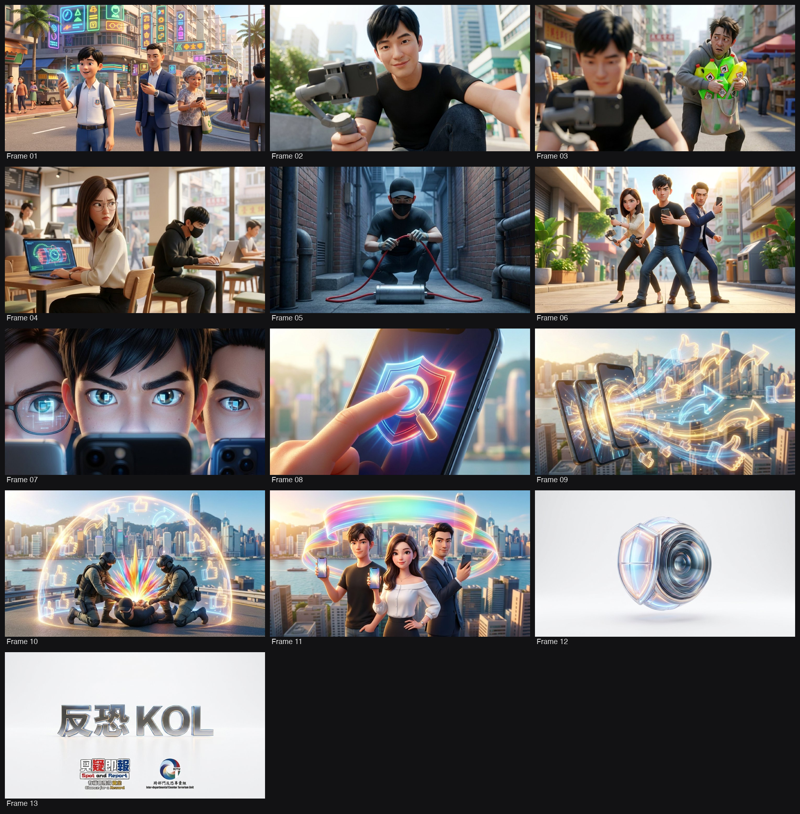
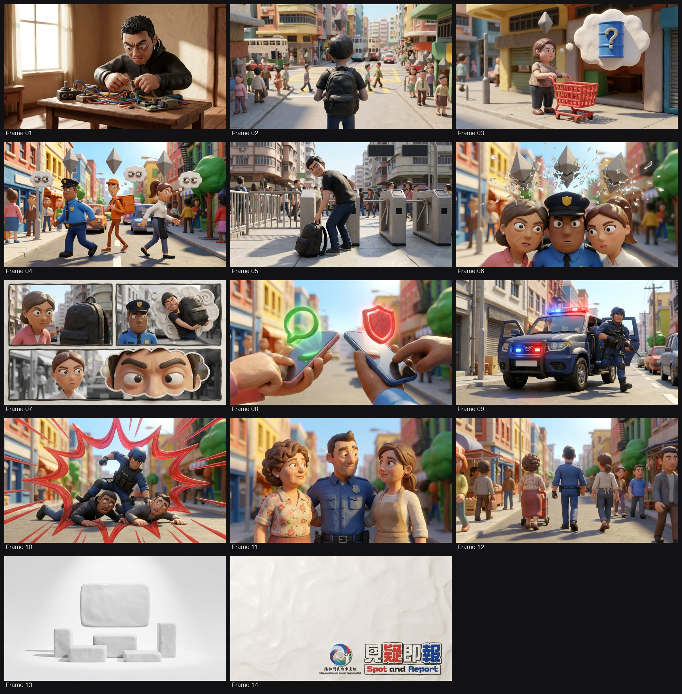
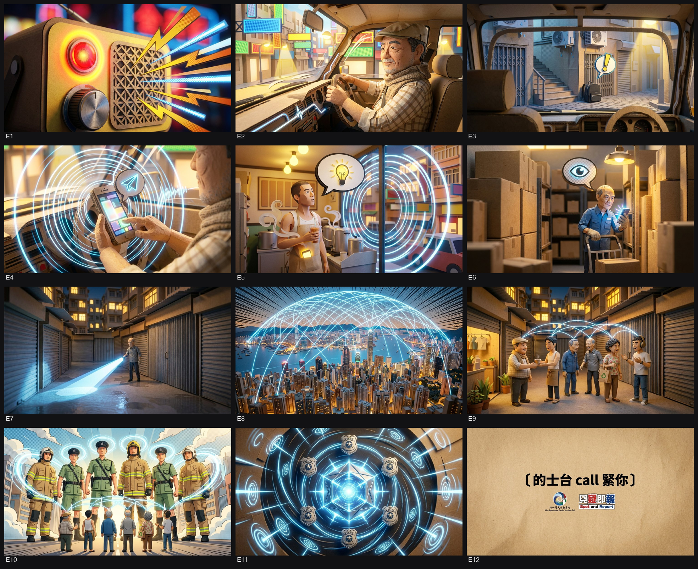
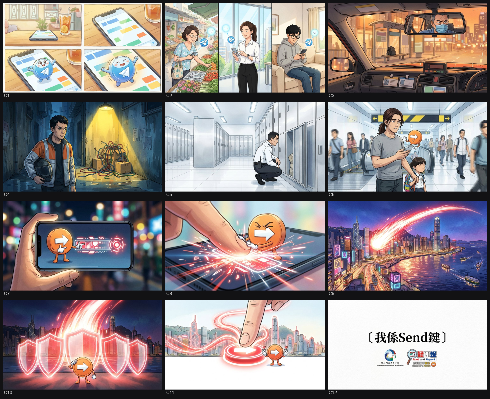
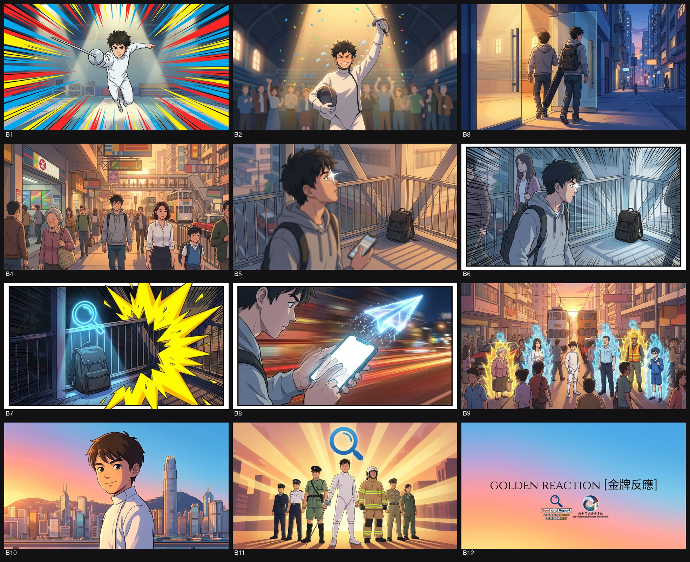
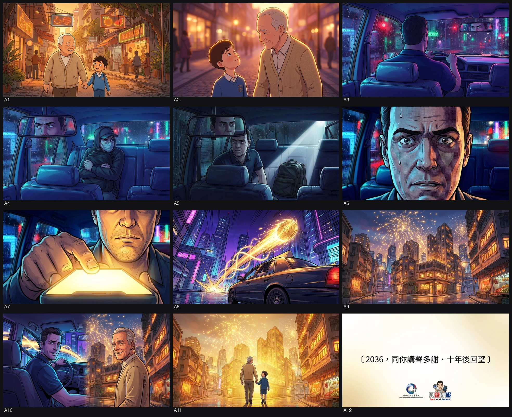

POLICE · POLICE
🏠📸 Visual 素材（43 個：LOGO 2、視覺參考 27、新聞配圖 8、海報/單張 6）
搵到嘅 LOGO／海報／單張／宣傳片／真實參考相，每個有原網址 · 📁 GDrive 存檔 folder。剔相後揀：⭐首選＝呢張參考優先過其他；🔁重搜＝搵過好啲（e.g. logo 污糟）；🗑刪除＝搵錯即清。


委員會／agency 諗橋一定收呢批做底，必跟。
這是一份針對香港警務處跨部門反恐專責組（ICTU）「見疑即報」設計及電視宣傳短片（TV API）製作項目的標書分析。以下根據標書及相關 ISD 寫稿指引，為你詳細拆解這 8 大核心要點：
① 背景同目的
* 客戶背景：跨部門反恐專責組（ICTU），由六個紀律部隊成員組成 。
* 項目目的：為 ICTU 的標誌性反恐主題「見疑即報」（Spot and Report）重新設計全新形象，並製作電視宣傳短片（TV API）進行公眾宣傳，以提高市民對反恐及「見疑即報」的警覺性與認識 。
② 目標受眾
* 大眾市民：目標為一般社會大眾（members of the public） 。
* 無分年齡性別：標書的評分準則特別強調，設計內容必須清晰，讓所有年齡層及性別的受眾都能輕易理解及產生共鳴 。
③ 傳意目標 / 核心訊息
* 核心訊息：推廣「見疑即報」及「反恐舉報熱線」 。
* 預期成效（Expected Outcome）：透過全新宣傳活動，增加公眾對恐怖主義的防範意識，教導市民在遇到恐怖或暴力事件時應如何應對，並藉此建立市民與執法機構之間更緊密的關係 。
④ 影片 / 製作規格（集數、每集長度、語言、字幕、配音）
* 集數：只須製作 1 個版本（One version only） 。
* 長度：30 秒 。
* 語言及字幕：需提供廣東話及英文兩個版本。廣東話版必須配備繁體中文書面語字幕；英文版配備英文字幕 。
* 配音（VO）：包含廣東話及英語配音，英文版須盡量以英語表達 。
* ISD 寫稿及排版慣性：根據政府新聞處（ISD）指引，旁白及對白須用廣東話口語，畫面字幕（Super）必須為書面語；劇本須標明「旁白：(VO)」及「熒幕蓋字：」，長度約為 9-12 句，結尾必須有部門標誌、區徽及行動呼籲（CTA） [9-11]。
* 其他製作規格：建議使用 HDCAM、RED ONE 或同等高清器材拍攝，並需提交檔案格式（XDCAM HD422, MXF）、錄影帶格式（HDCAM），以及額外交出一個符合 W3C 無障礙網頁（WCAG 2.2 Level AA）標準的版本供網上發布 。影片需另外截取 12 張劇照（JPEG） 。
⑤ 指定班底（ERB 導師 / KOL / 吉祥物等）
標書內沒有強制要求使用指定的 ERB 導師、KOL 或既定實體吉祥物，但針對角色與演員有以下明確規定：
* 3D 動畫主角：創意要求中明確指出，需透過創意及靈活運用 3D 動畫來建立「主要角色」（main characters） 。
* 名人 / 演員（Celebrity involvement）：如提議邀請名人或演員參與 TV API，廣告公司（即承辦商）必須全面負責聯絡、藝人合約及版權清理（確保可作全球、永久、跨媒體播放）。此外，所有髮型、化妝、服裝、道具及交通費用，均須由廣告公司自行與藝人協商並包含在項目預算內 。
⑥ 創意及策略重點 / 風格要求
* 視覺風格：官方指定整體設計風格為 「3D 漫畫」（3D Comics） 。
* 敘事手法：需透過生動的故事及細節來帶出反恐意識，而非單純說教 。利用 3D 動畫及視覺特效（Visual Effects）吸引觀眾，加深大眾對「見疑即報」的印象 。
* 形象要求：整體設計必須為 ICTU 建立「正面形象」（positive image） 。
* 創意加分位（Innovative Suggestions）：標書設有創新建議加分區，可提出能提升市民參與度、吸引眼球的點子（Type I）；或提出 ESG（環境保護、社會責任或管治）相關建議，例如環保無紙化製作、聘用殘疾/更生人士等（Type II），越多實際可行的方案分數越高 [21-24]。
⑧ 任何強制要求或紅線 (Red Lines)
* 嚴禁用 AI 配音：配音工作必須由真人聲優進行，絕對不允許使用 AI 生成聲音（AI-generated voices are not permitted） 。
* TV API 預算封頂（DQ 位）：電視宣傳短片（Item 2）的製作預算硬性規定不可超過 HK$250,000。若報價高於此數，標書將不獲考慮 。
* 遞交方式（DQ 位）：必須採用「雙信封制」（技術建議書 Envelope B 與價格建議書 Envelope A 分開密封，再裝入 Envelope C），且信封表面絕不能顯示投標者公司名稱。只接受專人遞交或掛號信，遲交、傳真或電郵遞交一律作廢 [37-40]。
* 原創及版權買斷：提案必須是原創且未售予第三方的意念。一旦中標，絕不能將橋段轉售 。版權屬政府所有，需向政府交出完整源文件（Source files/ aep/ fla/ 分層大 file） [42-44]。
* 國安及守法紅線：嚴禁聘用非法勞工 。如承辦商從事可能構成危害國家安全罪行的行為，政府有權立即中止合約 [46-48]。
* 必須出席簡報會：缺席 2026 年 7 月 8 日的簡報會，已遞交的標書將直接作廢 。
fetch_source（pypdf）抽嘅標書逐字原文 —— 委員會／agency／debrief／5W1H 都餵呢份做 ground-truth。 · 📄 開原始檔 ↗
===== Invitation to Quotation - Spot and Report Design Service and TV API Production for ICTU (Final Version) - PDF.pdf(Specification 原件)=====
[p31]
Ref. (23) in ICTU/GEN/6 -20/1/3 Pt.6 Part IV – Quotation Specifications
31
Part IV – Quotation Specifications
1. Background and Key Message
1.1 The Inter-departmental Counter Terrorism Unit (ICTU), which comprises members
from six disciplinary forces intends to hire a service (‘Service’) from a professional
design company to redesign our signature Counter-Terrorism (CT) theme ‘Spot and
Report’ with a new image with TV API for publicity. The key message of the design
is to enhance the vigilance and awareness of members of the public in better
understanding of ‘Spot and Report’ and CT.
1.2 Design Service including two parts as follows:
(I) Promotion Truck, Advertisement Boards and Digital Advertisement
(a) Design Service for Promotion Truck, various size of advertisement boards
including billboards, wall stickers, poster, easy stand, etc (Annex D)
(b) Design Service for Digital Advertisements including e-banner, screensaver, e-
display board and digital panel, etc (Annex E)
(II) Production of 30 seconds ‘TV Announcements in the Public Interest (API)’ ,
including both Cantonese and English version fulfill all requirements of
Information Services Department (ISD) (Annex F & G)
2. Specifications for the Service Required
2.1 (I) Promotion Truck, Advertisement Boards and Digital Advertisement
(a) Design Service for Promotion Truck, various size of advertisement boards
including billboards, wall stickers, poster, easy stand, etc (Annex D)
Artwork Requirements are specified as follows:
i). Colour: CMYK mode
ii). Design and file format: The whole artwork must be in illustration and with
separate layer, which can be modified in the future. File format must be in high-
res and in jpg/TIFF, with minimum 300dpi or above
iii). Fonts: Must be created to outline / converted to path (please provide the document
of fonts style for further edition)
iv). File Size minimum 500MB or above
v). Preview file in JPG or PDF format
vi). Please provide colour proof for colour reference if necessary
vii). The theme of the overall design must project a positive image of ICTU. The key
message of the design is to enhance the vigilance and awareness of members of
the public understanding a signature CT theme ‘ Spot and Report ’ and other
themes as required by ICTU
viii). The theme style of artwork: 3D Comics
[p32]
Ref. (23) in ICTU/GEN/6 -20/1/3 Pt.6 Part IV – Quotation Specifications
32
2.2 Scope of Work:
i). The Contractor is required to design and produce various sets of ‘Spot and Report’
stories for ICTU. Once these stories are confirmed, the Contractor is required to
provide services for amendments (unlimited times).
ii). The Contractor is required to design with the following specifications (Width x
High) under paragraph (2.2) (ii). Details please see (Annex D).
(a) Wide Wall Sticker inside Tsim Sha Tsui MTR Station:
1943cm (W) x 195cm (H)
(b) Sticker of Promotion Truck: Interior and Outer (Actual Size to be confirmed)
(c) 2 Styles of Posters (size: A3 / A4)
(d) 2 Styles of Easy Stand: 80cm (W) x 200cm (H)
(e) Outer Wall Sticker of Central Police Station: 43m(W) x 33m(H)
(f) Standard Banner (for LCSD venue): 300cm (W) x 100cm(H)
(g) Large Billboard besides Mandarin Oriental Hong Kong:
1080cm (W) x 300cm (H)
(h) 5 Styles of Billboards at Subway of Chater Garden:
Design (1)-(4): 825mm (W) x 326mm (H)
Design (5): 1000mm (W) x 350mm (H)
2.3 (I) Promotion Truck, Advertisement Boards and Digital Advertisement
(b) Design Service for Digital Advertisements including e -banner,
screensaver, e-display board and digital panel, etc (Annex E)
Digital Requirements are specified as follows:
i). Colour: RGB mode
ii). Design and file format: The whole artwork must be in after effect/animation
and with separate layer, which can be modified in the future. File format
must be in 4K and in aep/fla format, with minimum 300dpi or above
iii). Preview file in MP4 format
iv). The theme of the overall design must project a positive image of ICTU. The
key message of the design is to enhance the vigilance and awareness of
members of the public understanding a signature CT theme ‘ Spot and
Report’ and other themes as required by ICTU
v). The theme style of artwork: 3D Comics
2.4 Scope of Work:
i). The Contractor is required to design with the following specifications
(Width x High) under paragraph (2.4) (i). Details please see (Annex E).
[p33]
Ref. (23) in ICTU/GEN/6 -20/1/3 Pt.6 Part IV – Quotation Specifications
33
(a) 2 Styles of e-banner: 1024(W) x 200(H) px
(b) 2 Styles of screensaver: 1024(W) x 768(H) px
(c) 2 Styles of e-display Board: 1920(H) x 1080(W) px
(d) 2 Styles of Digital Board at Police Officers’ Club (POC) and
Mong Kok Police Station: 1920(H) x 1080(W) px
(e) Digital Panel (30 seconds Animation) for MTR Advertisement:
5440(W) x 1440(H) px
2.5 (II) Production of 30 seconds ‘TV Announcements in the Public Interest (API)’,
including both Cantonese and English version with the following
specifications under paragraph (2.5) -(2.9). Details please see (Annex F &
G).
Deliverables (TV API)
i). One version only
ii). Shooting format: HDCAM, RED ONE or equivalent is preferred. High-definition
Video (HDV) formats and still camera shooting may be considered depending on
the creative.
iii). Output:
(1) File-based format : 16:9 (HD) in XDCAM HD422 at 50Mbps in MXF
(2) Video-tape format: 16:9 (HD) in HD CAM
iv). Duration: 30 seconds each
v). Language: Cantonese (with written Traditional Chinese sub titles 繁體中文書面
語) and English (with English subtitles)
vi). Background music: tailor-made / post-scored music is preferred
vii). Soft and hard copies of the scripts
viii). Soft and hard copies of the storyboard (together with draft scripts and description
of visuals in both Chinese and English)
ix). Copies required: Please refer to (Annex F)
x). Twelve still pictures from the footage of the completed TV API in JPEG format
for each language version
xi). Essential information in the visuals of the TV API, such as website address,
telephone number or e-mail address, is required to be accompanied by voice-over
script as appropriate.
xii). “Contractor is required to provide another version of the TV API which conforms
to the World Wide Web Consortium (W3C) Web Content Accessibility
Guidelines (WCAG) 2.2 Level AA standard for posting on the Internet. For
details, please visit the websites: http://www.webforall.gov.hk and
[p34]
Ref. (23) in ICTU/GEN/6 -20/1/3 Pt.6 Part IV – Quotation Specifications
34
https://www.w3.org/WAI/WCAG22/quickref/#time-based-media ”
xiii). For details, please visit the Web Accessibility Theme Page under ITG InfoStation
(https://itginfo.ccgo.hksarg/content/accessibility/index.htm). For enquiries,
please contact the Digital Accessibility Support Team of the Digital Policy Office
(Tel: 3974 6026, Email: wac@digitalpolicy.gov.hk)
2.6 Service Required (TV API):
The Contractor is required to provide the following services, materials and
professionals for the production of the TV and radio APIs:
i). Creative and copywriting services/materials for providing the creative concept,
scripts, slogans, storyboards, subtitles and graphic and photographic
images/materials; The creative proposal should be the contractor's original
idea and must not have been purchas ed by other parties beforehand. If the
contractor’s creative proposal is accepted in this quotation exercise, the
awarded contractor should not re-sell the idea to other parties.
ii). Full crew and equipment for location shooting both outdoor and indoor in Hon g
Kong (including transportation);
iii). Off-line and on-line editing;
iv). Cantonese and English voice-over talents for the conversations/narrations for the
TV API. The voice -over/ conversations/ narrations of the English TV version
should be delivered in English as far as possible. All voice-over work must be
conducted by human talents; AI-generated voices are not permitted;
v). The Contractor should be responsible for musical arrangement of the APIs (tailor-
made / post -scored music is preferred), clearance of all copyright issues and
obtain necessary licences at its own cost and expense for broadcasting anywhere
within and outside Hong Kong, any occasion and any usage using any media,
including, but not limited to, radio channels, TV, video walls, the Internet and
multi-media advertisements on public transport, and at seminars, exhibitions and
other public functions/activities, and for production of VCDs/DVDs/CD -ROMs
and other publicity materials by the Government for non-profit making purpose;
vi). Worldwide and perpetu al copyright of the APIs, VCDs/DVDs/CD -ROMs and
other publicity materials produced shall belong to the Government;
vii). Audio recording and sound mixing;
viii). All post-production services;
ix). Subtitles in written Traditional Chinese subtitles 繁 體 中 文 書 面 語 for the
Cantonese version and in English for the English version for the TV API;
x). Delivery of the TV to local TV, i.e. TVB, iCABLE HOY TV, PCCW Media (Now
TV), HKTVE (V iu TV), RTHK TV, under the instruction of the ISD . The
Contractor is also responsible for any station copy fees charged by the aforesaid
TV stations.
[p35]
Ref. (23) in ICTU/GEN/6 -20/1/3 Pt.6 Part IV – Quotation Specifications
35
2.7 Celebrity involvement (TV API):
If a celebrity/celebrities will take part in the TV API(s), the Contractor should be
responsible for lining up of celebrities and talents and clearance of performers’ rights
to enable the API(s) to be broadcast anywhere within and outside Hong Kong, any
occasion and any usage using any media, including, but not limited to, radio channels,
TV, video walls, the Internet and multi-media advertisements on public transport, and
at seminars, exhibitions and other public functions/activities, and for production of
VCDs/DVDs/CD-ROMs and other publicity materials by the Government for non -
profit making purpose; handling arrangements for filming and audio recording for
celebrities and talen ts and absorbing under this project the hair -styling, make -up,
costume, equipment/props and transportation/traveling fees incurred, the level of such
fees should be negotiated between the Contractor and the celebrities/talents.
2.8 Supervision (TV API):
The Contractor will be supervised by ICTU and ISD. In the course of production, the
contractor should cooperate with ICTU and ISD, and shall comply with all reasonable
instructions of ICTU and ISD. ICTU and ISD reserves the right to amend the
storyboards, scripts, slogans, subtitles and rough cuts if necessary.
2.9 Budget (TV API):
Our estimate for the cost inclusive of agency fee for the production of the TV API is
HK$250,000. Quotations above HK$ 250,000 will not be considered. Payment will
be made upon satisfactory completion of the required services and delivery of all
deliverables and submission of the fully completed “Information on Music Copyright
Form” and receipt by Government of the Contractor’s original invoice.
3. Launch Date
3.1 The new ‘Spot and Report’ theme core design work should be completed on or before
2026-09-11 as blueprint of remaining design.
3.2 The design of ‘Promotion Truck ’ (including interior and outer parts), ‘Poster’ and
‘EasyStand’ should be completed on or before 2026-09-18.
3.3 The TV API should be completed on or before 2026-12-15.
3.4 All design of ‘Digital Advertisements’ should be completed on or before 2027-01-08.
3.5 The design of ‘Wide Wall Sticker’ Advertisement inside Tsim Sha Tsui MTR Station
should be completed on or before 2027-01-15.
3.6 All remaining design services under the Contract should be completed on or before
2027-02-05.
[p36]
Ref. (23) in ICTU/GEN/6 -20/1/3 Pt.6 Part IV – Quotation Specifications
36
4. Expected Outcome
4.1 Through the new theme campaign , the key message of the design is to increase the
public awareness towards ‘Terrorism’, ‘Spot and Report’ and ‘CT Reporting Hotline’,
also know what to do in the event of a terrorist or violent incident as well as to build
a closer relationship between citizens and law enforcement agencies.
5. Proven Experience
5.1 The profile of the bidder, Project Manager, Programming Engineer and Designer shall
be provided in the submission of quotation documents.
6. Supervision
6.1 The Contractor shall be supervised by ICTU. The Contractor shall fully cooperate
with ICTU and comply with all instructions and requests for the design and production
services from ICTU throughout the Service Period. All the design of the publicity
truck shall seek confirmation from ICTU. The Contractor shall arrange a designated
contact person to be the contact point between the Contractor and the HKP.
7. Copyright
7.1 The ownership, copyright and all other intellectual property rights in all deliverables,
all copies, footages, shooting segments, editing leftover and negatives thereof, plans,
models (computer models or otherwise), sketches, drawings, computer software,
manuals, or other particulars or things prepared by the Contractor/Sub -contractors or
received by the Contractor/Sub-contractors in the course of the services shall be vested
in and belong to ICTU of HKP.
7.2 The contractor shall ensure that no intellectual rights of any third party have been or
will be infringed as a result of execution of the project and shall indemnify ICTU
against any claims for breach of intellectual property rights.
7.3 A complete set of source files, including but not limited to graphic designs and layouts,
and other related projects files and materials shall be provided to ICTU’s further
adaptations on any platform, not limited to that of ICTU or HKP, in the future.
8. Management of the Services Provided
8.1 The progress of work regarding the provision of services will be overseen by ICTU.
During the term of the contract, the Contractor is required to coop erate and work
closely with ICTU and/or other designates to ensure smooth delivery of the package.
The Contractor need to comply with all reasonable instructions of ICTU.
8.2 ICTU reserves the rights to amend and revise the proposed plan whenever necessary.
[p37]
Ref. (23) in ICTU/GEN/6 -20/1/3 Pt.6 Part IV – Quotation Specifications
37
9. Other Remarks
9.1 The potential service provider is required to attend a mandatory presentation session on
2026-07-08 (Wednesday) at Inter -departmental Counter -Terrorism Unit, Police
Headquarters, 1 Arsenal Street, Wan Chai, Hong Kong to explain their content in the
technical proposal and present the innovative suggestions to the selection committee.
9.2 The presentation session is only a platform for the potential service providers to further
elaborate their submitted documents or context and enables the selection committee
to clarify any ambiguities. No additional quotation document should be submitted nor
will be accepted by the selection committee. Failure to attend the presentation session
will render the previously submitted written proposal (technical proposal and price
proposal) by the potential service providers invalid . Each potential service provider
will only be allocated 25 minutes for the presentation session and will be informed of
the exact time by the responsible ICTU project officer.
- END -每個概念必跟，違 = 廢稿。
⚡ 創意亮點 — POLICE·POLICE（research 掘出嚟，可以做橋嘅真嘢）
1. 🏷️ 官方放大鏡標誌
- 事實：官方 Logo 以紅、黑、白為主色，設計核心是一個放大鏡圖像聚焦於可疑人物。（出處：官方來源 正名）
- 💡 可以點做橋：可以將「放大鏡」實體化，變成 3D 漫畫平民主角專屬的「看透隱藏細節」超能力或雷達裝備。
2. 🏷️ 六大紀律部隊集結
- 事實：跨部門反恐專責組 (ICTU) 實際上由警務處、海關、入境處、懲教署、消防處及飛行服務隊共 6 個部隊組成。（出處：研究 Research Brief）
- 💡 可以點做橋：影片結尾可以安排六款不同制服的人員以「復仇者聯盟」美漫風格同框登場，作為平民主角的最強後盾。
3. 🏷️ 反恐賞金機制
- 事實：官方推廣包含「反恐賞金」(CT Reward) 制度，如提供的線索對偵查罪案有關鍵協助可獲發賞金。（出處：研究 Research Brief / Annex D 草圖）
- 💡 可以點做橋：可以將「見疑即報」包裝成動漫世界中「賞金獵人」接任務、賺金幣解鎖成就的破格設定。
4. 🏷️ 中區警署巨型牆身
- 事實：標書強制交付物包括一幅面積達 43 米闊、33 米高的中區警署外牆巨型貼紙廣告。（出處：Invitation to Quotation - Part IV）
- 💡 可以點做橋：可以利用這幅巨牆設計 3D 錯覺大畫 (Trompe-l'œil)，畫出一個巨大漫畫角色「破牆而出」俯瞰街道尋找線索。
5. 💡 的士司機破案實錄
- 事實：真實案例中，曾有的士司機透過舉報可疑乘客，成功協助警方拘捕販毒人士，證明舉報機制能打擊一般嚴重罪案。（出處：研究 Research Brief）
- 💡 可以點做橋：可以選用的士司機作第一身視角，將日常載客遇到的古怪客變成懸疑漫畫主線。
6. 💡 5000名隱形神探
- 事實：截至2023年中，反恐熱線已收到超過 20,000 個舉報訊息，背後涉及超過 5,000 名真實的報料人。（出處：研究 Research Brief）
- 💡 可以點做橋：可以用「全港已有5000名隱藏神探」為號召，邀請觀眾撳手機成為第 5001 個社區英雄。
7. 🇭🇰 洗走「篤灰」負面觀感
- 事實：香港社會對「舉報」一詞容易聯想到「篤灰」，產生心理抗拒，市民傾向「多一事不如少一事」。（出處：研究 Research Brief）
- 💡 可以點做橋：橋段絕口不提宏大政治，純粹將主角描寫為幫街坊趕走危險品、守護自身社區「小確幸」的日常英雄。
8. 🏷️ 指尖上的 SMS 大絕
- 事實：除了緊急的 999，宣傳焦點落在利用短訊 (SMS) 63-666-999 及微信小程式作非緊急舉報。（出處：研究 Research Brief / Annex D 草圖）
- 💡 可以點做橋：畫面可以將「撳手機 Send 短訊」這個平淡動作，用 3D 特效誇張化成發射動漫光波大絕。
9. 🎯 Hidden Agenda（政府點解而家做）
- 事實：這條宣傳片背後的隱藏議程，是政府希望在經濟下行和社會對福利開支有疑慮的背景下，積極重塑其「為民服務」的形象，並強化香港在國家發展中的獨特角色。透過宣傳如「頤養院」和「出海專班」等政策，政府試圖軟性地推動市民接受與內地更緊密的融合，並將此包裝成香港發展的機遇。同時，針對「二元優惠計劃」的調整，政府則希望回應社會對公共財政可持續性的關注，並在調整福利的同時，透過宣傳強調其對弱勢社群的持續照顧，以維持社會穩定和政府的管治認受性。
- 💡 可以點做橋：可以將呢個深層目的織入概念，令片唔止講程序，更打中政府想傳達嘅 message。
好的，這是一份整合後的乾淨研究報告：
---
香港警務處跨部門反恐專責組「見疑即報」宣傳片策略研究
議題背景
* 客戶背景：跨部門反恐專責組（ICTU）於 2018 年成立，由六個紀律部隊組成，職能包括監察恐怖主義趨勢、跨部門情報協調、演習訓練及公眾教育。「見疑即報」屬其公眾教育主題之一，反恐舉報熱線 63-666-999 於 2022 年推出。(來源：zh.wikipedia.org)
* 政策脈絡：
* 政府現時的「POLICE」題材，核心涵蓋「安全城市 + 防騙 + 國安 + 科技執法」。
* 《2025年施政報告》將「維護國家安全」列入「一國兩制」及治理體系重點，並提出成立「AI 效能提升組」，推動政府部門利用 AI 提升效率，警務宣傳可與「智慧政府 / 智慧警政」連結。(來源：policyaddress.gov.hk)
* 反恐傳播重點轉向：近年反恐傳播重點已由「襲擊應對」（如「閃、避、求」）轉向「早期發現」，「見疑即報」更側重事前識別、舉報及建立公眾警覺。(來源：zh.wikipedia.org)
* 本地反恐演習趨勢：2024-2025 年公開資料顯示，「先驅」（青衣城）、「慧光」（啟德體育園）、「勇光」（啟德郵輪碼頭）等跨部門反恐演習，場景集中於大型商場、體育園、口岸／郵輪碼頭等人流密集公共空間。(來源：zh.wikipedia.org)
* 全球風險語境複雜化：Global Terrorism Index 近年重點包括 lone actor、網上激化、青年涉案、低技術襲擊等，公眾宣傳不再只關注「炸彈」，而是更廣泛的可疑行為、網上內容及社群早期訊號。(來源：theguardian.com)
* 海外「報告可疑」與「易用通報渠道」結合：英國 BTP 61016 短訊服務於 2023 年迎來十周年，累計超過 668,000 條公眾短訊；2025 年新版「See it. Say it. Sorted」再放大 61016 號碼及具體可疑例子。(來源：btp.police.uk, gov.uk)
關鍵事實與數據
* 最新官方罪案比較（2026年1月至3月 vs 2025年1月至3月）：
* 整體罪案：20,490 宗，按年少 266 宗，跌 1.3%。
* 暴力罪案：1,966 宗，按年跌 6.2%。
* 詐騙：9,427 宗，按年微跌 0.6%，佔整體罪案約 46%，為最大壓力點。
* 爆竊：167 宗，按年跌 39.1%。
* 傷人及嚴重毆打：808 宗，按年升 6.7%。
* 青少年罪犯數據：
* 10至15歲少年罪犯：302 人，按年升 13.5%。
* 16至20歲青年罪犯：451 人，按年升 27.0%。青少年法治 / 防罪教育可成為宣傳片支線。
* AI deepfake 風險：2024年香港有跨國公司職員被 deepfake 視像會議騙走約 2億港元，警方列作以欺騙手段取得財產案，由網罪部門跟進。(來源：theguardian.com)
* 警方防騙工具產品化：警務處「守網者」下的 Scameter / 防騙視伏器，可查電話、電郵、網址、付款戶口等；新版加入 AI 分析、用戶舉報、即時風險提示及熱門騙案排名。(來源：cyberdefender.hk)
相關官員與單位
* 行政長官：李家超 (施政報告及整體安全治理方向代表)
* 保安局局長：鄧炳強, GBS, PDSM, JP (2021年6月至今；1987年加入警隊，2019年任警務處處長) (來源：gov.hk)
* 警務處處長：周一鳴 (1995年加入警隊，2025年4月獲任命；背景包括刑事調查、情報、國際刑警經驗)
* 警務處副處長（行動）：葉雲龍 (2025年4月獲委任)
* 警務處副處長（管理）：陳俊燊
* 警務處副處長（國家安全）：簡啟恩 (負責警務處維護國家安全部門)
* 警務處助理處長（公共關係）：陳思達 (宣傳、傳訊、警民關係相關)
* 相關單位：香港警務處、保安局、反詐騙協調中心、網絡安全及科技罪案調查科、商業罪案調查科、公共關係部。
受眾關注點與社會 Sentiment
* 市民最切身關注：騙案「日日都有」，長者 / 家庭 / 打工仔怕中招。宣傳片應落實到生活場景，例如 WhatsApp、網購、求職、投資、假冒客服、假冒親友。
* 年輕人關注：網絡帳戶被盜、裸聊勒索、求職騙案、網購騙案；數據顯示青年被捕人數首季升幅明顯。
* 商界關注：AI deepfake、商業電郵詐騙、跨境匯款風險；可作警示「一個 click / 一個 call 都可以令公司損失巨大」。
* 對科技執法 Sentiment：兩極化。市民一方面希望警方快速破案、防騙、防暴力；另一方面關注私隱、監控、資料保存、誤標風險。Scameter 官方已特別說明資料來源及私隱安排，宣傳片可主動交代「工具幫你判斷風險，不取代個人核實」。(來源：cyberdefender.hk)
* 警隊形象：仍受 2019 年後社會記憶影響，宣傳片不宜只講權威；更有效是講「守護日常」「可求助」「市民與警隊一同防罪」。
近期宣傳與競品掃描
* ICTU「安全社區體驗館」（2023）：實體體驗館，將反恐／公共安全由抽象議題變成可參觀、可學習的體驗式教育。偏線下、參觀式，未必能即時轉化為大眾媒體的 30 秒記憶點。(來源：zh.wikipedia.org)
* ICTU / 警方「閃、避、求」（持續使用）：清晰三步驟，直接教市民遇襲時如何應對。功能性指示強，但已是常見「三字訣」公共安全傳播；若再只做步驟口訣，差異化有限。(來源：zh.wikipedia.org)
* 香港警務處 HKSOS（2024-2025）：利用 App、定位、山野活動、越野跑等方式，將「求助」變成具體工具使用；2025 年一周年報道指成功救援 135 名市民、下載約 12 萬。成功之處在於「市民有一個明確工具可以用」，而不只是呼籲小心。(來源：zh.wikipedia.org)
* 新界北防罪聯盟 / Project HERO（2023-2024）：夥拍企業、學界、社區網絡散播防騙資訊；以「全民防罪」及「你我都可以是 Hero」將防罪責任社區化。香港政府安全類宣傳近年常用「全民參與」「你都有角色」語氣；反恐若同樣講法，容易與防騙、防罪訊息調性重疊。(來源：zh.wikipedia.org)
* 英國 BTP「See it. Say it. Sorted」（2025 refresh）：多年鐵路安全耳蟲，2025 年首次大更新；新海報／廣播將 61016 號碼放得更清楚，並明示 unattended bag、有人進入不應進入區域等例子。官方指 61016 年報告量增至 255,088，較 2016 campaign launch 後增逾八倍。可借鑑之處在於「可疑例子 + 低摩擦通報渠道 + 重複曝光」。(來源：gov.uk)
* 英國 BTP 61016 十周年（2023）：強調 discrete reporting，即搭車時可改用 SMS 而非打電話；列出實際破案／救援例子。公眾不一定是「不想報」，而是怕尷尬、怕麻煩、怕即場講不方便；渠道設計是傳播一部分。(來源：btp.police.uk)
* 新加坡 SGSecure「What’s Your Role?」（2023 起）：將國民分成多個社會角色，包括 lookout、guardian、lifesaver、uniter、fact-checker 等；反恐連結急救、fake news、社會凝聚。不只講「見到可疑就報」，而是擴闊成「每個人有不同安全角色」。(來源：en.wikipedia.org)
* 澳洲 / Five Eyes 青年激化警示（2024）：安全機構與傳媒聚焦青少年網上激化、gaming / messaging platform、家長老師醫護早期識別。近年反恐教育開始由公共空間可疑物件，擴展到 online radicalisation 及身邊人行為變化。(來源：theguardian.com)
差異化空白（機會點）
* 「如何判斷可疑」仍是空白：現有宣傳多強調警覺、舉報，但較少逐層拆解「可疑」與「正常」之間的灰色地帶。
* 「報錯如何處理」講得少：市民最大心理阻力可能是怕小題大做、怕麻煩；同類宣傳較少正面處理這種猶豫。
* 「日常非英雄角色」未被充分使用：海外 SGSecure 會拆分角色；香港同類安全宣傳仍多用大眾籠統身份，少聚焦保安員、清潔工、車站職員、商場店員、學生、家長等日常觀察者。
* 「線上可疑訊號」本地反恐宣傳相對少見：近年海外討論增多青年網上激化、平台內容、身邊人行為轉變；香港「見疑即報」仍容易被理解為街上可疑物件。
* 「跨部門」本身未被轉化成市民可理解價值：ICTU 六部門協作是硬事實，但大眾未必知道與自己有何關係；現有公開材料多是組織／演習層面，少見從市民生活場景理解六部門如何接力。
* 「低摩擦報告」可被講得更具體：英國 BTP 成功之處在於 61016 可 discreet text；香港熱線、短訊、微信等渠道若只在結尾出現，未必解除「如何報、報什麼、何時報」的不確定感。
香港角色
* 國際樞紐與風險節點：香港作為國際金融中心、貿易中心、航空樞紐，資金流、人流、數據流密集，因此也是跨境騙案、洗黑錢、網絡罪案的高風險節點。施政報告亦將國際金融、貿易、航運、航空中心定位列為核心優勢。(來源：policyaddress.gov.hk)
* 城市風險管理者：香港警隊的角色不只是「拉人」，更是城市風險管理者，涵蓋前線巡邏、重大活動保安、國安執法、跨境情報、防騙教育、網絡風險提示。
* 對外敘事定位：香港要保持「安全、穩定、可信」才能支撐金融、旅遊、盛事經濟及國際商業。
* 對內敘事定位：警察不是離市民很遠的符號，而是每日處理報案、救急、防騙、保護家庭財產的公共服務。
---
以下以官方網站／官方機構網站核實。創作稿建議統一用以下寫法。
1. 部門／辦事處正名
- 跨部門反恐專責組（專責組）／Inter-departmental Counter Terrorism Unit (ICTU)
網址：https://www.ictu.gov.hk/
備註：2018年4月成立，由六個紀律部隊成員組成；英文不要寫成 “Interdepartmental” 或 “Counter-terrorism Unit”。來源：ICTU「認識我們」列明中英文及成立背景。([ictu.gov.hk](https://www.ictu.gov.hk/tc/about-us/)) ([ictu.gov.hk](https://www.ictu.gov.hk/en/about-us/))
- 保安局／Security Bureau
網址：https://www.sb.gov.hk/
備註：ICTU 是「於保安局協調下」成立，不宜寫成警務處轄下單位。([ictu.gov.hk](https://www.ictu.gov.hk/tc/about-us/))
- 警務處／Hong Kong Police Force (HKPF)
網址：https://www.police.gov.hk/
備註：官方網站頁首用「香港警務處／Hong Kong Police Force」；ICTU 成員列表用「警務處」。([police.gov.hk](https://www.police.gov.hk/ppp_tc/index.html)) ([police.gov.hk](https://www.police.gov.hk/ppp_en/index.html))
- 香港海關／Customs and Excise Department (C&ED)；懲教署／Correctional Services Department (CSD)；消防處／Fire Services Department (FSD)；政府飛行服務隊／Government Flying Service (GFS)；入境事務處／Immigration Department (ImmD)
備註：以上為 ICTU 六個成員部門官方寫法。([ictu.gov.hk](https://www.ictu.gov.hk/tc/about-us/)) ([ictu.gov.hk](https://www.ictu.gov.hk/en/about-us/))
- 政府新聞處／Information Services Department (ISD)
網址：https://www.isd.gov.hk/
備註：標書提及 TV API 須符合 ISD 要求；ICTU 亦指「閃、避、求」政府宣傳片與 ISD 合作製作。([isd.gov.hk](https://www.isd.gov.hk/)) ([ictu.gov.hk](https://www.ictu.gov.hk/tc/about-us/))
- 康樂及文化事務署／Leisure and Cultural Services Department (LCSD)
網址：https://www.lcsd.gov.hk/
備註：LCSD venue 中文應寫「康文署場地」或「康樂及文化事務署場地」。([lcsd.gov.hk](https://www.lcsd.gov.hk/))
2. 計劃／政策／程序正名
- 「見疑即報」／“Spot and Report”
備註：ICTU 官方公眾教育主題；的士及物流業界運動均用此英文。不要譯成 “See Something Say Something”。([ictu.gov.hk](https://www.ictu.gov.hk/en/about-us/))
- 反恐舉報熱線 63-666-999／CT Reporting Hotline 63-666-999
備註：2022年6月推出，首階段包括短訊及微信舉報渠道。([ictu.gov.hk](https://www.ictu.gov.hk/tc/about-us/)) ([ictu.gov.hk](https://www.ictu.gov.hk/en/about-us/))
- 作出舉報／Report Suspicious Incidents
備註：非緊急懷疑恐怖主義相關消息可用 ICTU 系統；緊急或可能緊急情況須致電 999。([ictu.gov.hk](https://www.ictu.gov.hk/tc/ct-awareness/report/)) ([ictu.gov.hk](https://www.ictu.gov.hk/en/ct-awareness/report/))
- 「閃、避、求」／“Run, Hide, Report”
備註：暴力襲擊／恐襲應變指引；不要寫成 “Run, Hide, Tell”。([ictu.gov.hk](https://www.ictu.gov.hk/tc/emergency-response/rhr/)) ([ictu.gov.hk](https://www.ictu.gov.hk/en/emergency-response/rhr/))
- 「應急三識」／“Three Basic Skills on Emergency Preparedness”
備註：包括「識滅火、識自救、識逃生」；英文不是 “Three Emergency Knowledge”。([ictu.gov.hk](https://www.ictu.gov.hk/en/about-us/)) ([ictu.gov.hk](https://www.ictu.gov.hk/en/emergency-response/3-basic-skills/))
- 「安全社區體驗館」／“Safe Community Hub”
備註：ICTU 官方頁面及影片用語。([ictu.gov.hk](https://www.ictu.gov.hk/en/))
- 「安全社區小程式」／“Safe Community” WeChat Mini Program
備註：用於便利市民「見疑即報」。([ictu.gov.hk](https://www.ictu.gov.hk/en/about-us/))
- 《聯合國（反恐怖主義措施）條例》（香港法例第575章）／United Nations (Anti-Terrorism Measures) Ordinance (Cap. 575)
備註：ICTU 官方恐怖主義定義頁引用此法例；括號用全形中文括號。([ictu.gov.hk](https://www.ictu.gov.hk/tc/terrorist-threat/terrorism/)) ([ictu.gov.hk](https://www.ictu.gov.hk/en/terrorist-threat/terrorism/))
- 《中華人民共和國香港特別行政區維護國家安全法》（《港區國安法》）／The Law of the People’s Republic of China on Safeguarding National Security in the Hong Kong Special Administrative Region (National Security Law)
備註：ICTU 官方用作列明「恐怖主義活動罪」定義。([ictu.gov.hk](https://www.ictu.gov.hk/tc/terrorist-threat/terrorism/)) ([ictu.gov.hk](https://www.ictu.gov.hk/en/terrorist-threat/terrorism/))
3. 專有名詞／技術詞對照
- 反恐／counter-terrorism；簡稱 CT
備註：ICTU 英文網站用 CT。([ictu.gov.hk](https://www.ictu.gov.hk/en/))
- 反恐意識／CT awareness
備註：官方頁面為 “Enhance CT Awareness”。([ictu.gov.hk](https://www.ictu.gov.hk/en/))
- 應變能力／Emergency Response
備註：官方欄目為「加強應變能力／Emergency Response」。([ictu.gov.hk](https://www.ictu.gov.hk/en/))
- 可疑活動／Suspicious Activities；可疑物品／Suspicious Objects；可疑事件／Suspicious Incidents
備註：三者分開用，不要混用。([ictu.gov.hk](https://www.ictu.gov.hk/en/ct-awareness/suspicious-activities/)) ([ictu.gov.hk](https://www.ictu.gov.hk/en/ct-awareness/suspicious-object/)) ([ictu.gov.hk](https://www.ictu.gov.hk/en/ct-awareness/report/))
- 恐怖主義行為／terrorist act；恐怖主義活動／terrorist activities
備註：Cap.575 用 “terrorist act”；《港區國安法》相關段落用 “terrorist activities”。([ictu.gov.hk](https://www.ictu.gov.hk/en/terrorist-threat/terrorism/))
- SPOT 四類可疑活動：Support 支援、Preparation 前期準備、Online Materials 網上內容、Terrorist Ideologies 恐怖主義思想
備註：官方以 “SPOT” 作 acronym。([ictu.gov.hk](https://www.ictu.gov.hk/tc/ct-awareness/suspicious-activities/)) ([ictu.gov.hk](https://www.ictu.gov.hk/en/ct-awareness/suspicious-activities/))
- 政府宣傳短片／TV Announcements in the Public Interest (TV API)
備註：API 在此不是「應用程式介面」。ICTU 英文里程碑亦用 Announcement on Public Interest 指「閃、避、求」宣傳片。([ictu.gov.hk](https://www.ictu.gov.hk/tc/about-us/)) ([ictu.gov.hk](https://www.ictu.gov.hk/en/about-us/))
4. 易錯／易混淆
- 正：跨部門反恐專責組／Inter-departmental Counter Terrorism Unit
錯：跨部門反恐怖主義專責組、Interdepartmental Counter-terrorism Unit。
- 正：「見疑即報」／“Spot and Report”
錯：見疑即舉報、Spot & Report、See and Report。
- 正：「閃、避、求」／“Run, Hide, Report”
錯：Run, Hide, Tell /
搵到嘅官方來源（網頁名 + 撮要，似 search 結果；撳入睇原文）：
- 除標書表明，人物一般使用華人面孔（東亞／香港華人），唔好生成西方／白人臉
- 衣著連戲：同一角色每一格都著返同一套衫（衫款／顏色／髮型／配件固定），除非故事明寫佢換咗衫
- 全 board 畫風完全一致：同一 render 風格／同一打燈／同一色調／同一線條筆觸，由頭到尾統一，似同一個畫師一次過畫
- Storyboard 盡量唔好出現雨傘；若劇情一定要有雨傘，唔可以係黃色
唔強制，諗橋時隨機抽嚟畀 agency 撞火花。
5W1H 創意 Provocation — POLICE
WHO — 對邊個講 + 佢而家點
- Q1 如果呢個 message 只可以打動「最唔關心、最 cynical」嗰個觀眾 —— 要加咩一個 element(畫面/聲/人物/情境)先 3 秒內 hook 住佢、令佢唔 skip?
→ 加入「反恐賞金 (CT Reward)」真實派發現金或數字跳動嘅 3D 動漫視覺特效，或者用極端特寫（Extreme Close-up）呈現日常生活中極具侵入性嘅異常細節（例如唐樓梯間漏出誇張嘅化學品綠色煙霧）。
- Q2 呢班受眾平時食開咩視聽語言(平台/節奏/語氣)?要 adapt 邊種佢熟悉嘅風格,先入到腦而唔似「政府嘢」?
→ 佢哋睇開 IG Reels 同熱血動漫。要 adapt 日系 Webtoon 嘅「多格畫面分割（Split-panel）」同帶有動態集中線嘅極快剪接節奏，徹底捨棄傳統政府 API 單一機位、慢推鏡嘅說教節奏。
WHAT — 收窄到一個 + 證據
- Q3 成個 campaign 只准觀眾記住一個 element(一個畫面 / 一個 visual device / 一句)—— 你揀咩?點解係佢?
→ 官方標誌核心嗰個「紅、黑、白放大鏡」。可以將佢實體化，變成 3D 漫畫世界入面平民主角發現破綻時，雙眼發光或畫面瞬間變色聚焦嘅專屬 Visual Device。
- Q4 客戶 key message 好抽象,要用咩具體 element(真場面/真數字/真人/真物)去「show 唔 tell」,令佢落地、唔流口號?
→ 放入官方真實數據「超過 5,000 名隱形神探 / 收到 20,000 個舉報」，配合主角撳智能電話輸入「SMS 63-666-999」或微信小程式嘅真實 UI 互動畫面。
WHY — 點解信 + 情感
- Q5 觀眾點解要信 / 關佢事?要加咩證據 element 或情感共鳴 element,先由「事不關己」變「同我有關」?
→ 加入的士車廂、茶餐廳水吧或物流貨倉等極具香港基層搵食氣息嘅 3D 漫畫場景，將防恐情感轉化為「保護自己開工範圍同飯碗」，避開宏大嘅政治敘事。
WHEN / WHERE — 出街情境
- Q6 呢條嘢實際喺邊度、咩狀態被睇到(電視 prime / 車廂無聲 / 手機 scroll / 戶外經過)?要 adapt 咩風格(有聲冇聲 / 首 3 秒 / 大字 / 節奏)先食到當下情境?
→ 影片會喺港鐵 5440x1440 數碼展板及電子屏幕等無聲環境出街。必須 adapt 「高度視覺化、零聲音依賴」嘅風格，首 3 秒加入巨大、爆出畫面嘅 3D 美漫擬聲詞字體（如 BOOM!、SNIFF!）。
- Q7 出街時間(事件前/中/後)decide 調子係「預告期待」定「總結成就」?要加咩 element 配合呢個時間感?
→ 宣傳屬於「事件前預防」性質，調子係「懸疑與化解」。可以加入類似計時炸彈倒數嘅視覺跳動，或者配合急促心跳聲效嘅 3D 畫面震動元素，喺主角撳掣舉報嗰一秒瞬間靜止。
HOW — 風格 + 差異化
- Q8 同類(同部門/同題材)政府片嘅「安全做法」係咩?要 adapt / 升級邊種風格 element(質感/節奏/transition/配樂/美術流派),先做到「框內最高質」而唔悶?
→ 治安類安全做法係「警員巡邏真人演繹 + 書面語 Super」。今次要升級採用對標高質動畫嘅「Cel-shading（卡通渲染）3D 漫畫」美術流派，並利用穿透物件（如鏡頭穿過鎖匙窿或手機屏幕）嘅誇張 3D 運鏡過場。
- Q9 要加咩一個 unexpected element(反差/新 visual device/新手法),先同部門過往 campaign 拉開距離、唔似翻炒,但又唔踩紅線?
→ 營造與《守城》重裝備大製作嘅極大反差——影片首 25 秒畫面「零警察、零制服」，全程只用平民視角推進，直到最後結尾先出六個紀律部隊嘅元素作為後盾。
【呢條 brief 判定】目的:其他 題材:未定
【同目的(其他)ISD 慣性】主開頭 真人/講者(65%);格式率 旁白73% 熒幕蓋字96% 標誌結尾96% CTA53% 感嘆65% 三段式·0%;慣用結尾 社會福利署標誌, 衞生防護中心標誌, 衞生署標誌, 熒幕蓋字： iAM Smart+ 標誌
【對口 ISD 舊作借鏡(同 目的×題材,參考佢點寫,唔好照抄,要創新)】
— 幸福上流 置業圓夢 [其他 | 房屋置業/長者家庭]
▶ https://www.youtube.com/watch?v=phWv4V2eOh0&list=PL1188A9802575C33F
男旁白：請等等！ / 男旁白：啊，我想上車啊！ / 熒幕蓋字：未來5年 / 大約60,000個資助出售單位供應 / 女旁白：放心，未來有許多機會 / 熒幕蓋字：新一期居者有其屋計劃及 / 綠表置居計劃 / 4月30日起接受申請 / 女旁白：新一期居屋及綠置居4月30日起接受申請 / 女旁白：前兩次未能成功置業的申請者 / 可獲得額外一個抽籤號碼 / 熒幕蓋字：居屋綠表配額比例由40%升至50% / 女旁白：今期居屋會增加綠表比例 / 熒幕蓋字：40歲以下白表申請者 / 抽籤號碼＋1個 / 女旁白：白表青年申請者可獲得額外一個抽籤號碼 / 女旁白：「白居二」亦會增加配額 / 女旁白：置業的機會多了 / 熒幕蓋字：分布多區 / 可負擔的售價 / 居者有其屋計劃屋苑 / 綠表置居計劃屋苑 / 女旁白：價格亦在可負擔範圍內 / 熒幕蓋字：家有初生 / 家有長者 / 女旁白：家有初生或長者的家庭更可優先選樓 / 熒幕蓋字：出售居者有其屋計劃單位 / 出售綠表置居計劃單位 / 白表居屋第二市場計劃 / 4月30日起接受申請 / 男女旁白：幸福上流 置業圓夢 /
— 選擇註冊中成藥 認住HKC [其他 | 環保/節能]
▶ https://www.youtube.com/watch?v=X9zWre8b7ts&list=PL1188A9802575C33F
消費者： / 這麼多款式，怎樣選？ / 藥樽們： / 購買我吧 / 紫色藥樽： / 選擇我吧 / 綠色藥樽： / 我比較好呢 / 粉紅色藥樽： / 我便宜一點呢！ / 藍色藥樽： / 選中成藥 / 當然要選擇我這些已註冊的中成藥HKC / 熒幕蓋字： / HKC 註冊中成藥 / 藍色藥樽： / 我的包裝上印有「中成藥註冊編號」 / 即HKC開頭加五位數字 / 熒幕蓋字： / 中成藥註冊編號 HKC-XXXXX / 熒幕蓋字： / 安全 品質 成效 / 藍色藥樽： / 所有香港合法銷售的註冊中成藥 / 都已經符合安全、品質及成效的註冊要求 / 熒幕蓋字： / cmchk.org.hk / 衞生署標誌 / 藍色藥樽： / 可以上cmchk.org.hk查看註冊中成藥名單
— Hong Kong's iconic cultural and arts venues [其他 | 盛事旅遊]
▶ https://www.youtube.com/watch?v=5I3eUgnX5eM&list=PL1188A9802575C33F
旁白：文化藝術 / 展現香港多元魅力 / 熒幕蓋字：當下──香港藝術展 / 旁白：特區政府以文化藝術的「軟實力」 / 結合設施建設的「硬實力」 / 推動文化藝術產業發展並吸引旅客 / 熒幕蓋字：天馬凌雲——故宮博物院藏繪畫珍品 / 旁白：香港的文化藝術場地各具特色 / 融入傳統與現代優點 / 配合先進科技 / 致力將香港打造成為更具活力 / 熒幕蓋字：油街焦點—左旋們浴場 / 旁白：更富創意的國際文化都會 / 熒幕蓋字：2026年巴塞爾藝術展香港展會 / 旁白：香港—國際文化都會 / 熒幕蓋字：中華人民共和國香港特別行政區區徽
— 水果蔬菜 2+3 輕鬆融入每一餐 [其他 | 公共衞生]
▶ https://www.youtube.com/watch?v=_iNDAroBSLc&list=PL1188A9802575C33F
熒幕蓋字： 日日2+3 / 女旁白（唱）： 水果兩份 / 熒幕蓋字： 水果2份 / 「1份水果」約等於： / 2個小型水果 / 1個中型水果 / 半碗水果塊 / 女旁白（唱）： 蔬菜三份 / 熒幕蓋字： 蔬菜3份 / 「1份蔬菜」約等於： / 1碗未經烹調葉菜 / 半碗煮熟的蔬菜 / ¾杯純蔬菜汁 / *部分含澱粉質根莖類及醃製類蔬菜除外 / 女旁白（唱）： 天天來為健康加分 / 熒幕蓋字： 提供不同營養 / 維生素C / 鉀 / 葉酸 / 膳食纖維 / 女旁白（唱）： 多款多色 / 好吃有益 / 熒幕蓋字： 有助預防疾病 / 男旁白： 進食足夠蔬果 / 可以預防肥胖和減低患上慢性疾病的風險 / 熒幕蓋字： 心臟病 / 中風 / 肥胖 / 糖尿病 / 某些癌症（如大腸癌） / 女旁白（唱）： 早餐 / 熒幕蓋字： 早餐 / 女旁白（唱）： 午餐 / 熒幕蓋字： 午餐 / 女旁白（唱）： 還有晚餐 / 熒幕蓋字： 晚餐 / 星級有營食肆標誌 / 女旁白（唱）：
— 2026年4月3日起二元優惠計劃由每程劃一$2調整為「兩蚊兩折」 [其他 | 長者家庭/公共衞生]
▶ https://www.youtube.com/watch?v=-UAWGShCdCw&list=PL1188A9802575C33F
熒幕蓋字 ： 兩蚊兩折 / 政府長者及合資格殘疾人士公共交通票價優惠計劃 / 運輸署網頁二維碼 / 馮素波（唱）： 兩元兩折 跟我學唱歌 / 馮素雲（唱）： 兩元兩折 我約了人逛街 / 馮素波（唱）： 低於或等於十元 只算兩元 / 熒幕蓋字 ： $2 / 馮素雲（唱）： 高於十元 兩折一樣興奮 / 熒幕蓋字 ： 兩折 / 馮素波旁白 ： 由2026 年4 月3日起 / 熒幕蓋字 ： 2026 年 4 月3日起 / 馮素波旁白 ： 二元優惠計劃由每程劃一兩元調整為「兩蚊兩折」 / 轉乘車程一樣適用 / 熒幕蓋字 ： 轉乘車程同樣適用 / 馮素波旁白 ： 受惠對象維持不變 / 熒幕蓋字 ： 60歲或以上香港居民 / 合資格殘疾人士 / 馮素波旁白 ： 詳情請瀏覽網頁或致電1823查詢 / 熒幕蓋字 ： 兩蚊兩折 / 運輸署網頁 / www.td.gov.hk / 查詢電話：1823 / 馮素波、馮素雲（合唱） ： 兩元兩折 優惠相伴最開心 / 熒幕蓋字 ： 2026
— Application for Phase 3 of Simple Public Housing [其他 | 房屋置業]
▶ https://www.youtube.com/watch?v=BtU7TWHUSYI&list=PL1188A9802575C33F
女旁白：「簡約公屋」首四個項目已經全面供住戶入住 / 女旁白：每個月租金只是約八百至三千多元不等 / 住戶的居住環境和生活質素大有改善！ / 女旁白：第三期申請包括位於啟德 / 熒幕蓋字：啟德世運道簡約公屋中英標誌 / 啟德世運道 / 女旁白：柴灣及屯門的四個項目 / 於今年第二季開始供住戶入住 / 熒幕蓋字：柴灣常安街簡約公屋中英標誌 / 柴灣常安街 / 熒幕蓋字：屯門欣寶路簡約公屋中英標誌 / 屯門欣寶路 / 女旁白：現已接受申請 / 熒幕蓋字：屯門青發街簡約公屋中英標誌 / 屯門青發街 / 女旁白：有迫切住屋需要便立即申請吧！ / 熒幕蓋字：「簡約公屋」第三期申請 / 啟德世運道 / 柴灣常安街 / 屯門欣寶路 / 屯門青發街 / 熒幕蓋字：「簡約公屋」第三期申請 / 啟德世運道 / 柴灣常安街 / 屯門欣寶路 / 屯門青發街 / 現已接受申請 / 「簡約公屋」標誌 / 「簡約公屋」網頁二維碼 / 房屋局標誌
交標 logistics：要交咩表格/文件、幾時截。
真表頁自動 render 入對應部門 Master Form GSlide（開 GSlide 直接填）。🟦直 🟨橫。
撳上面掣 → AI 逐張表認要填咩欄（公司名/地址/BR…）→ 自動填入 Master Form Registry 嘅 Fill_2606_POLICE_ICTU Spot and Report Design tab → 你開 Registry copy 啲值入 GSlide 真表頁。⚠️ 價錢/簽名要自己填。（全程 GAS 做，唔使部 Mac 開機）
Form GSlide 已 render 真表頁做 background → 人手填。
🎞️ 開 POLICE Form GSlide- 截標：2026-07-06 (Monday) 12:00 p.m. (Hong Kong time)
- 印幾多份：in duplicate (the original copy and one copy)
- 幾多信封：3 個
- Soft copy（電子副本：CD/USB？）：需要交 soft copy。標書原文明文要求：「The technical proposal should also include soft and hard copies of the proposal (together with relevant materials not limited to 3D design of theme, character, sub-slogan, storyboard, animation and reference) in Chinese/English」(未有明確指定 CD 或 USB 等格式)
- 交去邊 — To：Inter-departmental Counter Terrorism Unit
- 交去邊 — Address：Police Headquarters, 1 Arsenal Street, Wanchai, Hong Kong
- 信封 label「Envelope A - Price Information」要寫：`Envelope A - Price Information
Quotation for Design Service - ‘Spot and Report’ CT Advertisement and TV API for Inter-departmental Counter Terrorism Unit (ICTU)
Quotation Ref. No. : (23) in ICTU/GEN/6-20/1/3 Pt.6 Closing Date : 2026-07-06`（絕對不能在信封面顯示投標者/公司名稱 (should bear no reference to the name of the Bidder)。必須密封 (sealed)。）
- 信封 label「Envelope B - Technical Information」要寫：`Envelope B - Technical Information
Quotation for Design Service - ‘Spot and Report’ CT Advertisement and TV API for Inter-departmental Counter Terrorism Unit (ICTU)
Quotation Ref. No.: (23) in ICTU/GEN/6-20/1/3 Pt.6 Closing Date : 2026-07-06`（絕對不能在信封面顯示投標者/公司名稱。必須密封 (sealed)。）
- 信封 label「Envelope C」要寫：`Envelope C – (Please in duplicate and put both Envelope A & B inside Envelope C)
Quotation for Design Service - ‘Spot and Report’ CT Advertisement and TV API for Inter-departmental Counter Terrorism Unit (ICTU)
Quotation Ref. No.: (23) in ICTU/GEN/6-20/1/3 Pt.6 Closing Date : 2026-07-06`（將 A、B 兩個信封及 Annex C 放進此最外層信封。絕對不能在信封面顯示投標者/公司名稱。必須密封 (sealed)。）
- 預算（Budget）：TV API 製作預算為 HK$250,000 (報價超過 HK$250,000 將不獲考慮)
- 費用明細要求（Fee Proposal Breakdown）：有要求，須於 Envelope A (Price Proposal) 提交 Item (1) 及 Item (2) 的成本報價明細 (breakdown of cost) 硬本 (Part I 第 2 頁)。
- 2026-07-06 截標 Quotation Closing
- 2026-07-07 通知入圍名單
- 2026-07-08 評審簡報會 Presentation Session
- 2026-09-11 完成主視覺核心設計
- 2026-09-18 完成宣傳車、海報及易拉架設計
- 2026-12-15 完成 30 秒 TV API 製作及獲最終審批
- 2027-01-08 完成所有電子屏幕廣告設計
- 2027-01-15 完成尖沙咀港鐵站牆身貼紙設計
- 2027-02-05 完成所有剩餘設計服務
標書無指定 → 亂數 spread（≥1 名人、≥1 動畫，其餘正常）。每間 agency 收唔同 💡創意角度＋🎨畫風＋🎭device 做發散；標書寫明要名人／動畫就全部跟，無指定先亂數。🏛 委員會＝第 8 個單位（紫色行），同 7 間 agency 並列。
| 🏢 單位 | 🤖 Model | 💡 創意角度 | 🎨 畫風 | 🎭 Device |
|---|---|---|---|---|
| Agency 1 | grok-sub | 【反轉慣例】搵出呢類政府片最公式化嘅拍法，然後反轉佢：由意想不到嘅角度、次序或結局講同一個訊 | 寫實真人 | ⭐ 名人 |
| Agency 2 | claude-sub | 【格式騎劫】騎劫一個香港人日日見慣嘅熟悉格式（天氣報告/交通消息/茶記餐牌/拍賣會/遊戲直播 | Paper-craft 紙藝 | — |
| Agency 3 | chatgpt-codex | 【極端對比】用一個極端 before/after 或 with/without 對比，將件事 | 3D Animation 立體動畫 | — |
| Agency 4 | gemini-2.5-flash-search | 【第一身視角】成條片由一個意想不到嘅第一身視角講（一件物/一隻動物/個 logo 本身/一對 | Watercolor 水彩 | 🎬 動畫 |
| Agency 5 | nlm | 【時間錯位】玩時間：倒帶/快進/十年後回望今日/過去同未來對話，令訊息有時間重量。 | Classic | — |
| Agency 6 | deepseek-chat | 【視覺 device 行先】由一個強烈、簡單、可重複嘅視覺 device 出發（一件物/一個 | Heritage 古典 | — |
| 🏛 委員會 | 8 崗位協作（見下表） | 跨崗位協作：策略總監定向→CD 踢橋→AD 執行，用齊全部策略種子收斂（vs agency | 跨畫風（每概念各自揀） | 🎲 混合 |
委員會內部係多崗位協作（上面紫色行嗰個單位嘅細節）：
| ↳ 策略總監 | gemini-3.1-pro-preview | |||
| ↳ 文案(Copywriter) | deepseek/deepseek-v4-pro | qwen/qwen3.7-max | moonshotai/kimi-k2.6 | |||
| ↳ 美術指導(Art Director) | qwen/qwen3.7-max | |||
| ↳ CD 創意總監(踢橋,唔出 final) | moonshotai/kimi-k2.6 | |||
| ↳ AD 客戶總監 / Account Director(踢橋,代表客) | gpt-5.5 | |||
| ↳ CD 收斂(出最終交付) | claude-opus-4-8 | |||
| ↳ Agency 獨立提案(Route A — 每間 agency 一個 model 單 call,多樣性) | (run_route_a.py | |||
| ↳ CD 揀三甲(評分驅動 — confirm 評審團 top3 + 推薦理由) | x-ai/grok-4.3 | |||
共用底料（8 個單位全部一定收）：標書原文、DEBRIEF、💭 5W1H provocation、⚡ 創意亮點 hooks、🔬 差異化 research、🛡️ 官方正名 grounding。
每間 agency 隨機唔同（種子發散，避免 7 把聲撞同一橋）：①🧭 創意進路種子（每 run offset +1 輪換，同一 model 下個 run 換進路）②📺 ISD 舊作暴露隨機派（對口／原文／both／完全唔餵 4 選 1，部分 agency 完全唔受舊作框）③🎭 device（名人／動畫／正常，標書指定就全跟）④🎨 畫風（9 款亂數唔撞）。
本次最新 run 各 agency 實際抽到嘅隨機種子：
| 🤖 Agency | 🧭 創意進路（種子） | 📺 ISD 舊作暴露 |
|---|---|---|
| chatgpt-codex | 【極端對比】用一個極端 before/after 或 with/without 對比，將件事 | 對口+原文 |
| claude-sub | 【格式騎劫】騎劫一個香港人日日見慣嘅熟悉格式（天氣報告/交通消息/茶記餐牌/拍賣會/遊戲直播 | 完全唔餵（純種子） |
| deepseek-chat | 【視覺 device 行先】由一個強烈、簡單、可重複嘅視覺 device 出發（一件物/一個 | 完全唔餵（純種子） |
| gemini-2.5-flash-search | 【第一身視角】成條片由一個意想不到嘅第一身視角講（一件物/一隻動物/個 logo 本身/一對 | 完全唔餵（純種子） |
| grok-sub | 【反轉慣例】搵出呢類政府片最公式化嘅拍法，然後反轉佢：由意想不到嘅角度、次序或結局講同一個訊 | 對口+原文 |
| nlm | 【時間錯位】玩時間：倒帶/快進/十年後回望今日/過去同未來對話，令訊息有時間重量。 | 原文節錄 |
8 間諗橋時都收到呢份 brief（製作要求 3D/mascot/明星、老闆方向…）做底，再各自加上面 dispatch 嘅角度/畫風/device。概念諗咗會 gatekeep 對返 brief 符合先生 BD。
標書 TAB（你嘅 BRIEF — 全份，必跟）
📋 標書撮要
這是一份針對香港警務處跨部門反恐專責組（ICTU）「見疑即報」設計及電視宣傳短片（TV API）製作項目的標書分析。以下根據標書及相關 ISD 寫稿指引，為你詳細拆解這 8 大核心要點：
① 背景同目的
* 客戶背景：跨部門反恐專責組（ICTU），由六個紀律部隊成員組成 。
* 項目目的：為 ICTU 的標誌性反恐主題「見疑即報」（Spot and Report）重新設計全新形象，並製作電視宣傳短片（TV API）進行公眾宣傳，以提高市民對反恐及「見疑即報」的警覺性與認識 。
② 目標受眾
* 大眾市民：目標為一般社會大眾（members of the public） 。
* 無分年齡性別：標書的評分準則特別強調，設計內容必須清晰，讓所有年齡層及性別的受眾都能輕易理解及產生共鳴 。
③ 傳意目標 / 核心訊息
* 核心訊息：推廣「見疑即報」及「反恐舉報熱線」 。
* 預期成效（Expected Outcome）：透過全新宣傳活動，增加公眾對恐怖主義的防範意識，教導市民在遇到恐怖或暴力事件時應如何應對，並藉此建立市民與執法機構之間更緊密的關係 。
④ 影片 / 製作規格（集數、每集長度、語言、字幕、配音）
* 集數：只須製作 1 個版本（One version only） 。
* 長度：30 秒 。
* 語言及字幕：需提供廣東話及英文兩個版本。廣東話版必須配備繁體中文書面語字幕；英文版配備英文字幕 。
* 配音（VO）：包含廣東話及英語配音，英文版須盡量以英語表達 。
* ISD 寫稿及排版慣性：根據政府新聞處（ISD）指引，旁白及對白須用廣東話口語，畫面字幕（Super）必須為書面語；劇本須標明「旁白：(VO)」及「熒幕蓋字：」，長度約為 9-12 句，結尾必須有部門標誌、區徽及行動呼籲（CTA） [9-11]。
* 其他製作規格：建議使用 HDCAM、RED ONE 或同等高清器材拍攝，並需提交檔案格式（XDCAM HD422, MXF）、錄影帶格式（HDCAM），以及額外交出一個符合 W3C 無障礙網頁（WCAG 2.2 Level AA）標準的版本供網上發布 。影片需另外截取 12 張劇照（JPEG） 。
⑤ 指定班底（ERB 導師 / KOL / 吉祥物等）
標書內沒有強制要求使用指定的 ERB 導師、KOL 或既定實體吉祥物，但針對角色與演員有以下明確規定：
* 3D 動畫主角：創意要求中明確指出，需透過創意及靈活運用 3D 動畫來建立「主要角色」（main characters） 。
* 名人 / 演員（Celebrity involvement）：如提議邀請名人或演員參與 TV API，廣告公司（即承辦商）必須全面負責聯絡、藝人合約及版權清理（確保可作全球、永久、跨媒體播放）。此外，所有髮型、化妝、服裝、道具及交通費用，均須由廣告公司自行與藝人協商並包含在項目預算內 。
⑥ 創意及策略重點 / 風格要求
* 視覺風格：官方指定整體設計風格為 「3D 漫畫」（3D Comics） 。
* 敘事手法：需透過生動的故事及細節來帶出反恐意識，而非單純說教 。利用 3D 動畫及視覺特效（Visual Effects）吸引觀眾，加深大眾對「見疑即報」的印象 。
* 形象要求：整體設計必須為 ICTU 建立「正面形象」（positive image） 。
* 創意加分位（Innovative Suggestions）：標書設有創新建議加分區，可提出能提升市民參與度、吸引眼球的點子（Type I）；或提出 ESG（環境保護、社會責任或管治）相關建議，例如環保無紙化製作、聘用殘疾/更生人士等（Type II），越多實際可行的方案分數越高 [21-24]。
⑦ 交付物同時間表
項目分為三大交付部分，與付款期掛鉤 [4, 25-28]：
* 投標截標：2026年7月6日 中午12:00 。
* 遴選簡報會：2026年7月8日（必席，每間公司 25 分鐘） [30-32]。
* 第一階段（佔 50% 服務費）：
* 2026年9月11日前：完成「見疑即報」主視覺核心設計（作為藍本）。
* 2026年9月18日前：完成宣傳車（內外）、海報（A3/A4）及易拉架（80x200cm）設計。
* 第二階段（佔 40% 服務費）：
* 2026年12月15日前：完成 30 秒 TV API（須獲 ISD 及 ICTU 最終審批）。
* 2027年1月8日前：完成所有電子屏幕廣告設計（包括警官俱樂部/旺角警署電子展板、MTR 5440x1440 30秒數碼動畫等）。
* 2027年1月15日前：完成尖沙咀港鐵站巨型牆身貼紙設計（1943x195cm）。
* 第三階段（佔 10% 服務費）：
* 2027年2月5日前：完成合約內所有剩餘的設計服務（如戶外橫額、中環警署外牆貼紙、遮打花園行人隧道廣告板等） 。
⑧ 任何強制要求或紅線 (Red Lines)
* 嚴禁用 AI 配音：配音工作必須由真人聲優進行，絕對不允許使用 AI 生成聲音（AI-generated voices are not permitted） 。
* TV API 預算封頂（DQ 位）：電視宣傳短片（Item 2）的製作預算硬性規定不可超過 HK$250,000。若報價高於此數，標書將不獲考慮 。
* 遞交方式（DQ 位）：必須採用「雙信封制」（技術建議書 Envelope B 與價格建議書 Envelope A 分開密封，再裝入 Envelope C），且信封表面絕不能顯示投標者公司名稱。只接受專人遞交或掛號信，遲交、傳真或電郵遞交一律作廢 [37-40]。
* 原創及版權買斷：提案必須是原創且未售予第三方的意念。一旦中標，絕不能將橋段轉售 。版權屬政府所有，需向政府交出完整源文件（Source files/ aep/ fla/ 分層大 file） [42-44]。
* 國安及守法紅線：嚴禁聘用非法勞工 。如承辦商從事可能構成危害國家安全罪行的行為，政府有權立即中止合約 [46-48]。
* 必須出席簡報會：缺席 2026 年 7 月 8 日的簡報會，已遞交的標書將直接作廢 。
⚠️ 製作要求（標書硬性，每個概念必跟，違 = 廢稿）
- 手語：唔使（標書原文:Language: Cantonese (with written Traditional Chin，p33）
- W3C影片：要（標書原文:Contractor is required to provide another version ，p156）
- 明星/名人/官員：無Preference（標書原文:If a celebrity/celebrities will take part in the T，p162）
- Mascot：Preferred（標書原文:3D animation is used creatively and flexibly to es，p14）
- 動畫：Prefer 3D（標書原文:3D animation is used creatively and flexibly to es，p14）
📑 要交文件（邊份 DOC + 頁碼）
- Quotation Schedule 1 ((1) Schedule of Rates & (2) Payment Method)（Part V – Quotation Schedule 1 · p38） — 一式兩份(Original copy and one copy)；填寫固定報價、銀行過數資
- Breakdown of cost for Item (1) & Item (2)（Part I – Lodging of Quotation · p2） — 包含 Item 1 (Truck/Boards) 及 Item 2 (TV API) 的詳
- Technical Proposal（Part I – Lodging of Quotation · p2） — 一式兩份(硬本)及電子檔，需包括 3D 主題設計、角色、分句、故事板等；正文連圖限 80
- Statement of Compliance（Part VI – Quotation Schedule 2 · p40） — 一式兩份；需剔選確認提案是否完全符合所有強制要求(Essential Requiremen
- Offer to be Bound（Part VI – Quotation Schedule 2 · p41） — 一式兩份；必須由授權人簽署及蓋公司印章，並填寫商業登記證(BR)及勞工保險號碼與到期日；必
- Copies of the Business/Branch Registration Certificate（Part VI – Quotation Schedule 2 · p40） — 商業登記證(BR)副本；必須作為證明文件夾附於 Schedule 2 內，一併放入 Env
- Information of Contractor（Annex C · p44） — 填寫公司背景、現有業務、聯絡人資訊等；如屬公司/法團，須附上 BR、報稅表及公司章程(M&
- Quotation Label（Annex A · p42） — 必須將標籤分別列印及貼於 Envelope A、Envelope B 及最外層 Envel
- Acknowledgement Slip（Annex B · p43） — 回條；只適用於「不參與」或「無法」投標的情況，須填妥原因並於截標前傳真(Fax)交回。
📮 交標方法（地址／信封／份數）
- 截標：2026-07-06 (Monday) 12:00 p.m. (Hong Kong time)
- 印幾多份：in duplicate (the original copy and one copy)
- 幾多信封：3 個
- Soft copy（電子副本：CD/USB？）：需要交 soft copy。標書原文明文要求：「The technical proposal should also include soft and hard copies of the proposal (together with relevant materials not limited to 3D design of theme, character, sub-slogan, storyboard, animation and reference) in Chinese/English」(未有明確指定 CD 或 USB 等格式)
- 交去邊 — To：Inter-departmental Counter Terrorism Unit
- 交去邊 — Address：Police Headquarters, 1 Arsenal Street, Wanchai, Hong Kong
- 信封 label「Envelope A - Price Information」要寫：`Envelope A - Price Information
Quotation for Design Service - ‘Spot and Report’ CT Advertisement and TV API for Inter-departmental Counter Terrorism Unit (ICTU)
Quotation Ref. No. : (23) in ICTU/GEN/6-20/1/3 Pt.6 Closing Date : 2026-07-06`（絕對不能在信封面顯示投標者/公司名稱 (should bear no reference to the name of the Bidder)。必須密封 (sealed)。）
- 信封 label「Envelope B - Technical Information」要寫：`Envelope B - Technical Information
Quotation for Design Service - ‘Spot and Report’ CT Advertisement and TV API for Inter-departmental Counter Terrorism Unit (ICTU)
Quotation Ref. No.: (23) in ICTU/GEN/6-20/1/3 Pt.6 Closing Date : 2026-07-06`（絕對不能在信封面顯示投標者/公司名稱。必須密封 (sealed)。）
- 信封 label「Envelope C」要寫：`Envelope C – (Please in duplicate and put both Envelope A & B inside Envelope C)
Quotation for Design Service - ‘Spot and Report’ CT Advertisement and TV API for Inter-departmental Counter Terrorism Unit (ICTU)
Quotation Ref. No.: (23) in ICTU/GEN/6-20/1/3 Pt.6 Closing Date : 2026-07-06`（將 A、B 兩個信封及 Annex C 放進此最外層信封。絕對不能在信封面顯示投標者/公司名稱。必須密封 (sealed)。）
💰 預算 / 費用
- 預算（Budget）：TV API 製作預算為 HK$250,000 (報價超過 HK$250,000 將不獲考慮)
- 費用明細要求（Fee Proposal Breakdown）：有要求，須於 Envelope A (Price Proposal) 提交 Item (1) 及 Item (2) 的成本報價明細 (breakdown of cost) 硬本 (Part I 第 2 頁)。
⛔ 注意事項 / 紅線
- [無障礙] 必須提供無障礙版本：須提供符合 W3C WCAG 2.2 Level AA 標準的 TV API 版本供網上發布。
- [無障礙] 指定字幕規格：廣東話版必須配備繁體中文書面語字幕；英文版須配備英文字幕。
- [明星] 明星或藝人參與條款：如邀請明星參與，承辦商須全包聯絡、處理全球永久跨媒體版權清理，並承擔化妝、服裝及交通等費用。
- [3D] 指定 3D 漫畫風格與角色：整體視覺風格指定為「3D Comics」(3D 漫畫)，並須靈活運用 3D 動畫建立主要角色 (main charact
- [其他] 嚴禁使用 AI 配音：所有配音工作必須由真人聲優 (human talents) 進行，絕對不允許使用 AI 生成聲音。
- [其他] 預算上限紅線 (DQ位)：TV API 製作報價硬性規定不可超過 HK$250,000，否則標書將不獲考慮。
- [其他] 原創及版權買斷：創作意念必須原創且未曾售予第三方，中標後不可將橋段轉售；版權全歸政府所有。
- [其他] 必須出席簡報會 (DQ位)：潛在供應商必須出席 2026 年 7 月 8 日的簡報會，缺席會導致標書作廢。
- [其他] 正面形象要求：所有設計內容必須為跨部門反恐專責組 (ICTU) 建立正面形象。
- [其他] 指定影片交付格式：影片只須製作一個版本 (30秒)，並須提交 XDCAM HD422 (MXF) 及 HDCAM 格式檔案。
⚡ 創意亮點（research 掘出嘅真嘢）
⚡ 創意亮點 — POLICE·POLICE（research 掘出嚟，可以做橋嘅真嘢）
1. 🏷️ 官方放大鏡標誌
- 事實：官方 Logo 以紅、黑、白為主色，設計核心是一個放大鏡圖像聚焦於可疑人物。（出處：官方來源 正名）
- 💡 可以點做橋：可以將「放大鏡」實體化，變成 3D 漫畫平民主角專屬的「看透隱藏細節」超能力或雷達裝備。
2. 🏷️ 六大紀律部隊集結
- 事實：跨部門反恐專責組 (ICTU) 實際上由警務處、海關、入境處、懲教署、消防處及飛行服務隊共 6 個部隊組成。（出處：研究 Research Brief）
- 💡 可以點做橋：影片結尾可以安排六款不同制服的人員以「復仇者聯盟」美漫風格同框登場，作為平民主角的最強後盾。
3. 🏷️ 反恐賞金機制
- 事實：官方推廣包含「反恐賞金」(CT Reward) 制度，如提供的線索對偵查罪案有關鍵協助可獲發賞金。（出處：研究 Research Brief / Annex D 草圖）
- 💡 可以點做橋：可以將「見疑即報」包裝成動漫世界中「賞金獵人」接任務、賺金幣解鎖成就的破格設定。
4. 🏷️ 中區警署巨型牆身
- 事實：標書強制交付物包括一幅面積達 43 米闊、33 米高的中區警署外牆巨型貼紙廣告。（出處：Invitation to Quotation - Part IV）
- 💡 可以點做橋：可以利用這幅巨牆設計 3D 錯覺大畫 (Trompe-l'œil)，畫出一個巨大漫畫角色「破牆而出」俯瞰街道尋找線索。
5. 💡 的士司機破案實錄
- 事實：真實案例中，曾有的士司機透過舉報可疑乘客，成功協助警方拘捕販毒人士，證明舉報機制能打擊一般嚴重罪案。（出處：研究 Research Brief）
- 💡 可以點做橋：可以選用的士司機作第一身視角，將日常載客遇到的古怪客變成懸疑漫畫主線。
6. 💡 5000名隱形神探
- 事實：截至2023年中，反恐熱線已收到超過 20,000 個舉報訊息，背後涉及超過 5,000 名真實的報料人。（出處：研究 Research Brief）
- 💡 可以點做橋：可以用「全港已有5000名隱藏神探」為號召，邀請觀眾撳手機成為第 5001 個社區英雄。
7. 🇭🇰 洗走「篤灰」負面觀感
- 事實：香港社會對「舉報」一詞容易聯想到「篤灰」，產生心理抗拒，市民傾向「多一事不如少一事」。（出處：研究 Research Brief）
- 💡 可以點做橋：橋段絕口不提宏大政治，純粹將主角描寫為幫街坊趕走危險品、守護自身社區「小確幸」的日常英雄。
8. 🏷️ 指尖上的 SMS 大絕
- 事實：除了緊急的 999，宣傳焦點落在利用短訊 (SMS) 63-666-999 及微信小程式作非緊急舉報。（出處：研究 Research Brief / Annex D 草圖）
- 💡 可以點做橋：畫面可以將「撳手機 Send 短訊」這個平淡動作，用 3D 特效誇張化成發射動漫光波大絕。
📅 日程
- 2026-07-06 截標 Quotation Closing
- 2026-07-07 通知入圍名單
- 2026-07-08 評審簡報會 Presentation Session
- 2026-09-11 完成主視覺核心設計
- 2026-09-18 完成宣傳車、海報及易拉架設計
- 2026-12-15 完成 30 秒 TV API 製作及獲最終審批
- 2027-01-08 完成所有電子屏幕廣告設計
- 2027-01-15 完成尖沙咀港鐵站牆身貼紙設計
- 2027-02-05 完成所有剩餘設計服務
每塊 BD 用英文字：A Pixar 3D CG 寫實 · B 3D 黏土。左＝要改邊格、右＝改用邊格（直接抽源頭嗰格落嚟，連畫風）。撳「套用」→ 嗰塊 BD 重砌（舊版留底，幾秒內換）。
每塊 BD 用英文字：A Pixar 3D CG 寫實 · B 3D 黏土。一格輸入，似揀印頁數：例 A1, B2, C3 或 A1-4, C3, D2（A1-4＝A1,A2,A3,A4，亦可寫 A1-A4；逗號分隔，有冇空格都得）。跨 BD 範圍（如 A1-B4）唔得，會叫你改。撳「砌成新 BD」→ 即砌一塊全新 BD，畀返新英文編號顯示喺下面，原有 BD 唔受影響。
Master GSheet「TV API Script {N}」手寫稿 → 跟你視覺指示 → NLM 生全風格（線稿／插畫／真人…），每格純畫面（唔蓋字）。
⏱ 送出改格 / 重做後，NLM 重生約需 8-10 分鐘；生緊嗰塊會標「🔄 重生緊」，完成自動換新圖（版面每 4 分鐘自動 refresh，或撳右上 🔄）。舊版留喺「↩︎ 睇返舊版」。
喺 Master GSheet 開「TV API Script 1／2／3」三個 tab 放唔同 TV API 稿，撳邊個 SET 就生邊個（全 NLM 風格各一，純畫面唔蓋字）。

↩︎ 睇返舊版 BD


創作概念:騎劫香港夜晚最有味道嘅聲音格式——的士無線電「call 台」廣播。一把沙啞嘅「台長」聲穿插全片:「各位車友,旺角站留意吓……」但佢 call 嘅唔係搵客,而係街坊之間互相通水報可疑。鏡頭跟一個紙雕的士司機落夜更,接力到水吧伙計、物流叔叔、看更——每個基層紙公仔都係城市嘅「眼仔耳仔」,一句通一句,訊號像紙做嘅電波一圈圈擴散全城。Big idea:「見疑即報」唔係高高在上嘅反恐,而係街坊之間「睇住你頭家」嘅老香港人情味網絡;最後六個部隊嘅紙公仔企喺街坊身後做最強後盾。對焦 empowerment + 警民夥伴,絕口不提政治,只講「守住自己搵食嘅街」。
人/景:紙雕的士司機(主角第一身)、水吧伙計、物流貨倉叔叔、街市看更;場景係夜晚紙摺香港——霓虹紙招牌、的士車廂、後巷貨倉,暖黃路燈。
Visual Device:紙電波漣漪——每當有人 send 短訊報料,手機彈出一圈圈摺紙波紋,由一個紙公仔傳到下一個,織成一張覆蓋全城嘅「紙線眼網」。視覺上一眼睇明「一個人報 → 全城連成一線」,muted 都成立。
主打口號:你嘅一句,守住成個社區。
Proposed 明星/名人:不適用。賣點係街坊嘅匿名英雄感,有面孔明星反而破壞「人人都係主角」嘅 framing;真人 VO 搵一把有的士台滄桑味嘅聲線就夠,守實 budget。
亮點扣連:用咗 ⑤的士司機破案實錄(主角第一身視角)、②六大紀律部隊集結(結尾六款紙制服公仔同框做後盾)、⑥5000名隱形神探(「全港 5000 個眼仔,夜晚冇瞓」)、⑦洗走篤灰(重新包裝成街坊互相睇住、人情味)、⑧SMS 63-666-999(紙電波由短訊觸發)。
---
兩條都係「3D 紙藝 + 格式騎劫」出發:Concept 1 走遊戲化、好玩、全年齡通殺、muted 環境最強;Concept 2 走基層人情味、暖、警民夥伴感最足。揀中邊條(或者邊個方向想溝),先 develop full 12-格 board。
騎劫的士台廣播+紙電波漣漪,format hijack 與 visual device 都好搶,muted 成立、人情味框架說服力強且絕口不提政治政治風險低;扣分位在於聲音格式偏窄受眾、ESG 只靠紙藝隱性帶過冇明寫環保/管治,故 6b 偏
訊息清楚、貼地有香港夜更人情味，的士台格式同紙電波記憶點強，能有效包裝見疑即報同警民夥伴，但ESG元素較薄弱。
創作概念: 將市民嗰下「唔多對路」嘅直覺,視覺化成一種人人都有嘅「超能力」。當主角察覺異常,世界會瞬間變成漫畫風格,官方嘅「放大鏡」標誌會變成主角嘅第六感雷達,鎖定可疑物件。呢個設定直接將「見疑即報」由一個猶豫嘅決定,變成一個自信、有型嘅本能反應,洗走「驚報錯案」嘅心理包袱。
人/景: 茶餐廳侍應、物流倉務員、巴士上層學生等,全部係最貼地嘅平民角色。場景係極具香港特色嘅日常空間,例如後巷、貨櫃碼頭、公共交通工具。
Visual Device: 放大鏡 HUD (Heads-Up Display)。當主角第六感啟動,眼前世界會短暫變成灰調漫畫,只有可疑物件(例如無人看管嘅背囊)會被 ICTU 官方 logo 嘅「放大鏡」紅框鎖定並保留顏色,極具視覺衝擊力。
主打口號: 你嗰下「唔對路」,就係成個香港嘅雷達。
Proposed 明星/名人: 不適用。
亮點扣連: 用咗亮點 🏷️官方放大鏡標誌 (將 logo 變成主角嘅超能力 HUD) + 🇭🇰洗走「篤灰」負面觀感 (將舉報包裝成一種型格嘅「直覺」本能,而唔係告密)。
概念新穎,將「見疑即報」轉化為型格直覺並巧用官方放大鏡logo做HUD,有效洗走篤灰負面感、貼地角色易共鳴及記憶點強;惟訊息對具體舉報行動(如何報、報咩)略嫌含蓄,且完全欠ESG元素拖低總分。
訊息清晰貼合「見疑即報」，以放大鏡HUD和第六感包裝有效降低舉報心理障礙，視覺記憶點強，但ESG元素幾乎未見。
創作概念:
由一部手機入面嘅「Send 鍵」第一身出發：平時佢送出飯局訊息、工作 WhatsApp、屋企人提醒，但今次，佢送出一條可以守護社區嘅重要線索。故事聚焦「舉報其實好具體」：市民見到可疑情況，唔需要自己冒險查證，只要用手機透過 SMS 63-666-999 或「安全社區小程式」作出舉報。畫面將撳 Send 嘅一刻變成水彩漫畫光軌，連到跨部門反恐專責組，令「見疑即報」變成一個記得住嘅指尖動作。
人/景:
一部手機穿梭幾個日常人物手上：的士司機、外賣員、商場保安、學生家長。場景包括的士車廂、商場儲物櫃附近、後巷收貨區、港鐵站出口；每個人都只係普通市民，但都可以係守護城市嘅一份子。
Visual Device:
「Send 鍵」係一粒有表情嘅 3D 水彩漫畫小角色，住喺手機屏幕入面。當手指撳落去，63-666-999 數字會變成紅白光軌，由手機飛過香港街景，最後匯聚成 ICTU 嘅六部門防線。KV poster 可用一隻手指即將撳下「Send」，光軌由手機屏幕延伸成香港城市輪廓，主畫面大字鎖定熱線。
主打口號:
指尖一報，全城多一重防線。
Proposed 明星/名人:
不適用。建議用不同年齡真人聲優做短句 VO，代表全港市民都可以參與；避免明星授權、全球永久使用權同 HK$250,000 budget 壓力。
亮點扣連：用咗亮點 8「指尖上的 SMS 大絕」將 63-666-999 變成記憶點；亮點 5「的士司機破案實錄」轉化為的士車廂場景；亮點 6「5000名隱形神探」可喺結尾用「下一個線索，可能就由你發現」帶出參與感。
將熱線63-666-999化成「指尖一報」記憶點，訊息具體清晰、口號易記、全民參與感強;惟ESG着墨極少(僅省授權成本)、跨部門防線視覺略概念化,影響力與創新機制可再深化。
訊息準確清晰，能把熱線及小程式化成易記的「撳 Send」行動，創意和記憶點強，但 ESG 內容較薄弱。
創作概念:騎劫香港人細個玩到大嘅「大家來找不同」遊戲格式。畫面一開二,左右兩格幾乎一模一樣嘅紙雕香港街景(街市 / 港鐵月台 / 商場),計時器跳緊,旁白用遊戲節目主持人語氣叫觀眾「搵下邊度唔同」。觀眾望真啲——原來唔同位係「一件無人看管嘅可疑行李」或者「一個鬼鬼祟祟放低紙箱嘅紙公仔」。搵到嗰刻,官方「放大鏡」logo「咔」一聲圈住,畫面變色聚焦,主角撳手機 send 短訊。Big idea:「見疑即報」其實就係一場全城都識玩、人人都贏到嘅搵不同遊戲——將沉重嘅「反恐舉報」變成有得玩、有成就感嘅日常觸覺,徹底洗走「篤灰」嘅心理包袱。
人/景:紙雕主角係一個普通街坊(師奶 / 後生仔 / 的士司機都得),場景係最日常嘅紙摺香港——街市檔口、港鐵車廂、商場中庭。背景一堆紙小人行緊。
Visual Device:官方紅黑白放大鏡 = 遊戲游標。佢喺紙世界滑過,掃到可疑位就「咔」一聲圈實、紙面彈出紅圈 + 厚卡紙摺嘅擬聲詞「SPOT!」,其餘畫面定格降彩度,淨係嗰件可疑物高光——零聲都明。
主打口號:見到唔同,即刻報。
Proposed 明星/名人:不適用。靠紙公仔角色 + 一把有親和力嘅真人遊戲主持式 VO 撐起,慳返明星費,守實 25 萬 cap(若 Raymond 想加分,可後補一把市民熟口熟面嘅遊戲節目主持聲線,但唔入鏡、唔搶 budget)。
亮點扣連:用咗 ①官方放大鏡標誌(實體化做遊戲游標 visual device)、⑥5000名隱形神探(尾段「你係全港第 5001 個搵不同高手」CTA)、⑦洗走篤灰(整個遊戲化 framing 就係解呢個痛點)、⑧SMS 63-666-999(搵到即撳手機 send 短訊收結)。
---
「搵不同」遊戲格式騎劫得聰明,可疑物一眼即明、近乎零聲都睇得通,概念創意同去『篤灰』包袱嘅切入點都好強;扣連官方放大鏡、5000神探、SMS全部到位,惟ESG只靠紙雕間接帶過、欠明確環保論述,impact亦偏靠單一遊戲機制略嫌單薄。
訊息清晰易明，遊戲化『搵不同』能有效降低舉報心理包袱並提升記憶點，但ESG元素幾乎未有實質提案。
創作概念:一場意外過後,鬧市一片頹垣、人群驚散 —— 突然畫面開始一格格倒帶:碎片飛返原位、人群退返轉頭、慌亂逆走,一路 rewind 到今朝一個最平凡嘅一秒,定格喺「嗰個冇人理會、擺喺月台角落嘅可疑背囊」。Super 打出:「改寫結局,只差當時一個舉報。」呢次,擦身而過嗰個返工女望返轉頭 —— 雙眼聚焦變色(放大鏡 device)、撳手機 Send 短訊 63-666-999,災難由頭到尾冇發生過。硬訊息:防範恐怖主義係全城責任,「見疑即報」就改寫得到結局。
人/景:一個普通返工嘅後生女做主角(平民第一身,零制服首 25 秒);場景係人流密集嘅港鐵月台 / 大型商場入口(扣近年反恐演習愛用嘅商場、體育園、口岸場景)。結尾六款制服人員以 Classic 美漫「集結」一 frame 同框,做平民最強後盾。
Visual Device:全城倒帶 —— 整個畫面時光逆流、碎片自我重組;接駁「放大鏡聚焦」:主角望向可疑背囊嗰刻,畫面瞬間抽色、紅黑白聚焦光圈鎖實目標。一冷(倒帶廢墟)一暖(撳掣化解)嘅時間落差,就係記憶鈎。
主打口號:見疑即報,改寫結局就喺呢一秒。
Proposed 明星/名人:不適用。主角為 3D 漫畫平民角色,慳低明星版權/酬金,將 25 萬 budget 全數推落動畫質感同倒帶特效。
亮點扣連:用咗 #1 官方放大鏡(實體化成主角聚焦超能力 device)+ #2 六部隊復仇者式同框(結尾後盾)+ #8 SMS 63-666-999 大絕(撳掣化解嗰一 beat),場景扣演習熱點商場/車站。
---
倒帶+放大鏡聚焦概念新穎、記憶鈎強,訊息與SMS熱線清晰,平民第一身具說服力;惟ESG著墨近乎零,僅以慳budget帶過,失分明顯。
訊息清晰直接、倒帶記憶點強且能有效帶出見疑即報，但ESG元素較弱，創新建議主要集中於視覺及敘事執行。
創作概念:
將官方 Logo 嘅「放大鏡」實體化，變成每個市民內心都有嘅「第六感裝置」。當主角感覺「唔對路」，呢個裝置就會喺主觀視角啟動，畫面瞬間轉為漫畫風格，將可疑之處高光鎖定。成個概念係將抽象嘅「警覺性」視覺化成一種人人都有嘅超能力，而「見疑即報」就係啟動呢種能力嘅最後一步。
人/景:
外賣仔穿梭舊區唐樓後樓梯、的士司機喺倒後鏡觀察乘客、學生喺人多擠迫嘅商場行過。全部都係極具香港特色嘅基層日常場景。
Visual Device:
「放大鏡視界」(The Lens)。當主角眉頭一皺，畫面會疊加一個半透明嘅圓形「放大鏡」UI。鏡內，可疑物件（如漏出不明液體嘅紙箱）會以高飽和度、帶有發光描邊嘅方式呈現；鏡外嘅世界則瞬間變成 desaturated（去飽和）嘅灰調，形成強烈視覺反差，將「見疑」呢個動作做到極致。
主打口號:
你嘅第六感，我哋嘅最強後盾。
Proposed 明星/名人:
不適用。
亮點扣連：用咗亮點 1 (官方放大鏡標誌) 將 Logo 核心變成 Visual Device；亦扣連亮點 7 (洗走「篤灰」負面觀感)，將舉報昇華為啟動個人「第六感」嘅自衛本能。
放大鏡視界視覺鈎子強、緊扣官方Logo又化解「篤灰」負面感,訊息清晰且具記憶點;惟對服務本身嘅創新建議偏弱,ESG元素近乎缺席,拉低總分。
訊息清晰準確，將「見疑即報」轉化為人人有嘅警覺本能，視覺裝置有創意及記憶點，香港日常場景有共鳴，但實際擴散影響及ESG元素較弱。
創作概念：
將香港經典漫畫《老夫子》嘅 heritage 視覺基因注入 3D Comics 世界。主角係一個喺街市送貨嘅「老夫子式」平民（戴鴨舌帽、格仔衫、懷舊波鞋），佢嘅日常生活場景（街市、唐樓、茶餐廳）就係「偵探基地」。橋嘅核心係：「你對眼，就係放大鏡」——透過主角嘅視角，日常事物會瞬間「漫畫化」：一袋無人認領嘅行李會爆出誇張嘅漫畫問號、一個行蹤可疑嘅人會出現「集中線」focus 佢嘅手腳動作。最後主角撳手機 Send SMS 63-666-999，畫面變成一束光射向天空，6個紀律部隊以「復仇者聯盟」pose 同框登場。
人/景：
一個 40 歲左右、草根味濃嘅送貨佬（設計成「老夫子」三毫子小人風格但 3D 化），場景係深水埗街市、唐樓後樓梯、茶餐廳水吧。
Visual Device：
「漫畫放大鏡」——當主角對某件事物起疑心，畫面會出現一個漫畫風格嘅圓形「聚焦框」（模擬放大鏡鏡片），框內事物會瞬間變成紅色高光 + 誇張細節線條，框外變黑白。呢個 device 可以喺成個 campaign（海報、宣傳車、MTR 牆貼）重複使用。
主打口號：
「睇真啲，就係幫手。」
Proposed 明星/名人：
不適用。用原創 3D 角色，唔用真人明星，慳 budget + 版權乾淨。
亮點扣連：
用咗 #1 官方放大鏡標誌（變成漫畫聚焦框）、#2 六大紀律部隊集結（結尾同框）、#5 的士司機破案實錄（轉做送貨佬日常）、#7 洗走「篤灰」（草根主角保護街坊飯碗）、#8 指尖 SMS 大絕（Send SMS 畫面變光波）。
---
老夫子IP+漫畫放大鏡device貫穿全campaign,recall同clarity都強,草根主角夠貼地;原創角色版權乾淨,但ESG著墨太弱(只提慳budget),創新性偏向視覺風格多於真正科技應用。
訊息清楚兼有本地共鳴，漫畫放大鏡同SMS記憶點強，但結尾英雄集結略公式化，ESG提案較薄弱。
創作概念:反轉「英雄定義」。開場係張家朗劍道奪金嗰下經典定格,旁白引你以為要講拼搏熱血——點知畫面急轉:鏡頭跟住佢收工落場,喺日常一程車/一條街,眼尾瞄到一件唔對路嘅可疑物,個反應快過揮劍嗰一下,即刻 63-666-999 見疑即報。Big idea:真正嘅「冠軍反應」唔係場上嗰一劍,而係生活入面留神嗰一秒——而呢種反應,全港 5000 個隱形神探都有,你都得。完全唔靠制服英雄主義,將「反恐警覺」重新定義成一種人人練得到嘅本能反射。
人/景:張家朗(便服,收工狀態);場景由比賽場館切去真實香港街景——港鐵、街市、行人天橋。可疑物用日常化處理(無人看管嘅背囊/紙箱),唔賣血腥恐懼。
Visual Device:「反射神經」定格 + 放大鏡聚焦。揮劍 freeze-frame 同「見疑」freeze-frame 用同一種子彈時間鏡頭語言對照剪接,告訴觀眾兩者係同一種反應;「見疑」嗰格同樣抽色、放大鏡光圈罩實可疑物,SPOT! 爆框。
主打口號:真正嘅冠軍反應,係留神嗰一秒。
Proposed 明星/名人:張家朗(香港男子花劍奧運金牌)。全民英雄、跨代認受、年輕有活力;「冠軍反應 / reflex」概念天生為佢度身,由運動場 reflex 借喻到civic reflex,reframe 順理成章又有話題性,啱晒「無分年齡性別」嘅大眾受眾。
亮點扣連:用咗 #6 5000 名隱形神探(「人人都有冠軍反應」嘅號召)、#1 官方放大鏡(視覺 device)、#8 SMS 63-666-999、#7 洗走篤灰(將舉報重新定義成本能反應、唔關政治);結尾可選 #2 六大部隊作後盾。
---
兩個概念最大分別:Concept 1 玩敘事次序(倒帶 + 賞金溫情),Concept 2 玩定義反轉(運動 reflex → civic reflex,熱血);一個低調影帝扮路人、一個全民英雄做自己,情緒一暖一燃,夠晒對沖。Raymond 揀邊個(或邊條 slogan)我先 develop 足 12 格 full board。
「冠軍反應」把運動 reflex 借喻為 civic reflex,定義反轉聰明、記憶點強、張家朗選角貼大眾,核心訊息(見疑即報 63-666-999)清晰且巧妙扣連隱形神探與洗走篤灰;惟 ESG 維度幾乎缺位、可疑物日常化雖好但實際說服力
訊息清楚連到見疑即報及熱線，運動反應轉化成公民警覺有新鮮感和高記憶點，張家朗有助擴散及說服力，但ESG內容幾乎未見具體方案。
創作概念:
用「唔理佢」同「見疑即報」嘅極端後果對比。開場一件無人看管可疑物品喺港鐵站／商場角落，本來只係一個細背包；當路人選擇扮睇唔到，它喺 3D 漫畫世界越變越大，陰影幾乎壓住成條街。到一位普通市民停低、多望一眼、用反恐舉報熱線 63-666-999 作出舉報，巨物即時縮返真實大小，交由跨部門反恐專責組跟進，帶出「小小警覺，可以阻止危險放大」。
人/景:
3D 動畫上班族、學生、長者、商場保安、港鐵乘客；場景可放喺港鐵月台、商場通道、行人天橋，方便延展到尖沙咀港鐵站巨型牆身貼紙、港鐵 5440x1440 數碼動畫 Panel 同宣傳車。
Visual Device:
「危險放大鏡反差」：可疑物品喺無人理時不斷膨脹，變成漫畫式巨大黑影；主角一用放大鏡 HUD 聚焦細節，畫面由恐慌式巨大化反轉成清晰資訊分層，包括「可疑物品」、「保持距離」、「見疑即報」、「緊急情況致電 999」。視覺上做到一眼記得：唔報，件事會被放大；報咗，風險會被正確處理。
主打口號:
你多望一眼，全城少一分險
Proposed 明星/名人:
不適用。以原創 3D mascot 式「放大鏡眼」市民角色作主角，可長線用於海報、易拉架、電子屏幕同巨型牆身，版權乾淨、易改易延展。
亮點扣連：用咗「官方放大鏡標誌」變成主角視覺能力；用「中區警署巨型牆身」可延展成巨物壓城／破牆 3D 錯覺 KV；同時扣「洗走『篤灰』負面觀感」，將舉報包裝成守護街坊日常安全。
訊息清晰、放大壓城反差概念搶眼且口號易記，多渠道延展力強；惟ESG幾乎缺席、明星元素欠奉，整體屬高水準但未滿分。
訊息清晰兼有強記憶點，3D放大反差及熱線行動扣題有說服力，但ESG建議較薄弱。
創作概念:2036 年,一個退咗休嘅的士司機拖住孫仔,行過一條熱鬧平安嘅街。佢同孫講當年事 —— 畫面倒返 2026 夜更:佢載到一個神色有異、落車留低可疑物嘅乘客,一度心諗「多一事不如少一事」,最後仲係撳咗短訊 63-666-999 舉報。十年時空對接:老年嘅佢隔住時間望住壯年嘅自己,一句「好彩你嗰晚撳咗」。硬訊息:你今日一個微小舉動,就係未來全城嘅安穩 —— 警民夥伴、賦權,唔賣恐懼。
人/景:的士司機做主角(扣真實的士司機破案實錄);2036 暖燈街景 vs 2026 的士車廂霓虹夜更,兩個時空交叉剪。街坊味十足,茶記、街市、貨倉做背景。
Visual Device:時間對倒接力 —— 同一個司機,老年(2036)同壯年(2026)隔住時空對望、一個動作接落另一個時空;當年舉報化成一粒「賞金/金幣」光點,飛越十年變成成條街嘅燈火,同時 counter 跳出「第 5001 個」。含蓄處理賞金,唔好太市儈,重點係「守住自己開工嗰條街」。
主打口號:你今日撳一下,就係十年後全城嘅安穩。
Proposed 明星/名人:可考慮以許紹雄(歡喜哥)型嘅親民老香港熟面孔做老司機形象藍本兼廣東話 VO —— 街坊、有正義感、入屋,洗到「篤灰」嘅負面觀感。⚠️ 但須計實版權/酬金能否壓喺 25 萬 budget 內;若爆 cap,即回落用真人聲優 + 純 3D 漫畫平民司機角色(VO 仍真人,跟紅線)。
亮點扣連:用咗 #5 的士司機破案(主角第一身)+ #6 5000 神探/第 5001(時空 counter)+ #3 反恐賞金(含蓄化成燈火 device)+ #7 洗「篤灰」(純守護街坊飯碗、絕口不提宏大政治)+ #8 SMS 63-666-999。
---
兩個橋揀邊個(或兩個都要 develop full board),話我知就落 12 格 storyboard + 完整 script(廣東話 VO / 書面語 Super / CTA)。
硬訊息(微小舉動=全城安穩、警民夥伴、洗篤灰)清晰準確;時空對倒接力+金幣化燈火device有記憶點且情感共鳴強,的士司機第一身+第5001 counter扣連亮點到位;惟賞金含蓄化雖避市儈卻削弱了訊息力度,星級版權/budget風險未解,
訊息清晰、情感同記憶點強，時空對倒創意突出並能淡化「篤灰」負面感，但 ESG 只屬間接社會責任層面，未有具體環保或管治建議。
創作概念: 將「見疑即報」包裝成一個動漫世界入面嘅「賞金獵人」任務。以一個極具代表性嘅基層職業(如的士司機)做第一身視角,將佢日常工作中遇到嘅可疑乘客同事件,用懸疑漫畫手法呈現。當佢決定舉報,就係「接咗個任務」,最後暗示有「反恐賞金」,將行動誘因由純粹嘅公民責任,增加一層更 personal、更有趣嘅動力。
人/景: 主角係一個飽經世故、觀察力強嘅的士司機。場景主要係佢嘅的士車廂內,透過倒後鏡、車窗觀察城市中嘅古怪乘客同可疑事件。
Visual Device: 任務觸發介面 (Quest Trigger UI)。當司機主角發現關鍵線索,佢嘅手機會彈出一個漫畫化嘅「任務檔案」介面,顯示可疑事件嘅簡報。佢撳掣 send SMS,就好似遊戲中「確認接取任務」,畫面會出現金幣彈出或「任務完成」嘅爽快特效。
主打口號: 見疑即報,全城嘅線索,等緊你解鎖。
Proposed 明星/名人: 黃子華。佢嘅「的士判官」形象深入民心,由佢演繹一個觀察力強、帶點 cynical 但內心正義嘅司機,極具說服力同親和力,能夠輕易將一個硬訊息軟化。
亮點扣連: 用咗亮點 🏷️反恐賞金機制 (將舉報 game 化,變成賞金任務) + 💡的士司機破案實錄 (直接採用最 relatable 嘅真實案例做主角設定)。
概念新鮮、黃子華選角貼地有說服力、game化機制提高記憶點;但「反恐賞金」誘因易誤導觀眾以為真有金錢回報、偏離純公民責任,訊息準確性有風險,且ESG元素近乎缺席。
訊息清楚而且以的士司機視角令舉報行動具體易明，動漫任務化和賞金誘因有記憶點，但需小心避免過度遊戲化反恐議題，ESG元素亦較弱。
創作概念:
用「當無事」同「即刻報」做極端 before/after。故事由一架的士穿過一個灰色、靜音、人人低頭嘅香港開始，司機留意到可疑乘客同可疑物品細節；一撳反恐舉報熱線 63-666-999，成條街即時由灰白變成紅黑白 3D 漫畫防線，跨部門反恐專責組成為市民背後嘅實在後盾。核心訊息係：市民唔需要做英雄，只要見疑即報，就已經係守護社區安全嘅第一步。
人/景:
3D 動畫的士司機、乘客、茶餐廳伙記、街坊；場景包括的士車廂、旺角街口、樓下商舖、路邊可疑物品。結尾見到警務處、香港海關、入境事務處、懲教署、消防處、政府飛行服務隊六個紀律部隊元素以漫畫分格形式同框，代表跨部門反恐專責組支援。
Visual Device:
「灰城開關」：未報之前，全城灰白、聲音被吸走、人物似機械公仔；司機手指撳出「63-666-999」一刻，手機短訊化成紅黑白光線，沿街道、窗框、倒後鏡擴散，將可疑細節逐格放大，城市即時變回有反應、有後盾嘅彩色 3D 漫畫世界。
主打口號:
見疑即報，一撳有後盾
Proposed 明星/名人:
不適用。建議用原創 3D 平民角色，控制 HK$250,000 TV API 預算，同時避免全球永久跨媒體藝人版權成本。
亮點扣連：用咗「的士司機破案實錄」做平民視角；用「指尖上的 SMS 大絕」將短訊 63-666-999 視覺化；結尾扣「六大紀律部隊集結」建立跨部門反恐專責組正面後盾。
灰變彩開關裝置搶眼、平民的士視角易代入，熱線同口號清晰利記憶；但屬常規3D動畫無突破性創新建議，且完全欠ESG元素拖低總分。
訊息清晰、視覺轉換有記憶點，能扣連熱線及跨部門後盾，但ESG元素較弱，創新建議亦偏向創意表現多於服務層面實質創新。
創作概念：
以「已有超過 5,000 名隱形神探」嘅真實數據做 hook。將「見疑即報」包裝成一個「全民隱形神探」嘅 3D 漫畫世界。主角唔係一個固定角色，而係一個「神探裝備箱」——一個 3D 漫畫風格嘅金屬箱，打開之後會彈出各種偵探 gadget：放大鏡（變形金剛式摺疊）、對講機（變 63-666-999 熱線手機）、徽章（變 6 個部隊標誌合集）。故事係「裝備箱」被不同嘅平民角色打開：一個巴士司機、一個學生、一個街市阿姐——每人打開箱後，畫面會 flash 去佢哋遇到嘅可疑情境（巴士上有無人看管背囊、學校附近有人拍攝敏感設施、街市有人搬運古怪化學品），然後佢哋用裝備箱入面嘅「熱線手機」舉報。最後一個 wide shot，全港各區嘅「裝備箱」同時發光，形成一個保護網覆蓋香港地圖。
人/景：
3 個 quick-cut 角色：巴士司機（車廂內）、中學生（學校後巷）、街市阿姐（菜檔前）。場景係典型香港公共空間。
Visual Device：
「神探裝備箱」——一個可以喺所有物料（海報、宣傳車、MTR 牆貼、TV API）重複出現嘅實體物件。箱嘅外形係復古偵探皮箱 + 漫畫機械感（紅黑配色）。每次打開有機械變形動畫，彈出不同 gadgets。
主打口號：
「你，就係第 5,001 個神探。」
Proposed 明星/名人：
不適用。用 3D 角色 + 裝備箱做主角，唔使明星，啱 budget。
亮點扣連：
用咗 #1 官方放大鏡標誌（箱入面 gadget）、#3 反恐賞金機制（「神探」身份取代賞金）、#5 5000名隱形神探（直接做 hook）、#7 洗走「篤灰」（裝備箱包裝成「幫手」工具）、#8 指尖 SMS 大絕（熱線手機 gadget）。
---
Raymond，兩個 concept 都係由「一個視覺 device 行先」：
- Concept 1：「漫畫放大鏡」——一個視覺動作，可以喺所有物料無限變奏
- Concept 2：「神探裝備箱」——一個實體物件，可以喺所有物料重複出現
兩者都符合 Heritage 古典畫風（Concept 1 直接 reference 老夫子；Concept 2 用復古偵探箱 + 機械變形，有 classic 味道），都係 3D Comics，都跟足 red lines，都唔超 25 萬 budget（無明星、無大製作 CG，用 cel-shading style 可以做得 efficient）。
你揀邊個，我哋再 develop full board + storyboard。
視覺device統一、口號入腦、成功將「篤灰」重塑為「神探」極具說服力,但裝備箱比喻略增認知負擔削弱訊息直接性,且完全欠缺ESG/環保可持續內容,6b近乎失分。
(1)訊息清楚扣緊見疑即報但略帶娛樂化；(2)裝備箱同3D漫畫化處理有新鮮感；(3)跨海報、車身、MTR、TV API延展性強；(4)「第5001個神探」易記；(5)平民角色有代入感但恐襲風險說服仍可更實；(6a)視覺device同舉報工具
創作概念:
由「見疑即報」標誌入面個放大鏡第一身講故事：佢每日喺香港街頭「睇多一步」，幫市民將容易忽略嘅可疑細節放大。水彩 3D 漫畫畫面由普通日常，瞬間被紅黑白放大鏡框住：無人看管嘅可疑物品、異常行為、危險訊號逐格浮現。最後帶出：市民唔需要自己查，見到可疑，就用 反恐舉報熱線 63-666-999 或相關渠道向 跨部門反恐專責組 作出舉報；緊急情況即打 999，遇暴力事件記住「閃、避、求」。
人/景:
港鐵月台、茶餐廳門口、屋邨通道、商場扶手電梯等香港日常場景；主角係「見疑即報」放大鏡本身，旁邊出現上班族、學生、長者、店員等普通市民。結尾先出現六個紀律部隊元素，以制服剪影／徽章色塊方式同框，代表 ICTU 作為市民後盾。
Visual Device:
一個紅黑白水彩放大鏡喺畫面游走，每掃過一個場景，世界會由柔和水彩變成高對比漫畫格，可疑細節被「咔嚓」放大成分鏡。KV poster 可用一個巨大放大鏡框住香港街景，鏡內見到市民用手機作出舉報，鏡外係平靜社區，形成「睇多一步，安全多一步」嘅主視覺。
主打口號:
見到可疑，唔好估估吓。見疑即報。
Proposed 明星/名人:
不適用。建議用真人聲優配放大鏡 VO，聲線親切、有少少機智感，避免明星版權同預算風險。
亮點扣連：用咗亮點 1「官方放大鏡標誌」作主角同 KV 核心；亮點 2「六大紀律部隊集結」作結尾後盾；亮點 7「洗走篤灰負面觀感」將舉報包裝成市民睇多一步、守護日常。
訊息清晰且齊全(熱線/ICTU/999/閃避求),放大鏡第一身敍事有記憶點並巧妙化解篤灰負面觀感;惟創意執行屬穩陣非突破,反創新落地建議偏弱,ESG幾近欠奉,拉低總分。
訊息準確清晰，放大鏡第一身視覺有記憶點並能淡化「篤灰」觀感，但缺少具體媒體落地、成效機制及ESG內容。
創作概念:
將「見疑即報」徹底遊戲化，包裝成一個全民參與嘅「城市賞金獵人」任務。利用官方真有嘅「反恐賞金」制度做餌，將市民描寫成接收任務、尋找線索、舉報嚟賺取「金幣」（賞金）同榮譽嘅玩家。呢個概念旨在用年輕人熟悉嘅手遊語言，將沉重議題變輕鬆，強調舉報係一種有回報、有成就感嘅集體行動。
人/景:
貨倉物流從業員、茶餐廳水吧師傅、屋邨保安員。全部都係喺崗位上最容易觀察到異常嘅「情報員」角色。
Visual Device:
「任務觸發」(Quest Triggered)。當主角發現可疑人同事，佢哋嘅手機會彈出一個 3D 漫畫風格嘅遊戲任務介面，顯示「新線索發現！」、「點擊上報」。當佢透過 SMS 63-666-999 或微信小程式舉報，畫面會出現誇張嘅「任務完成」特效，伴隨住金幣彈出同分數增加嘅視覺效果，最後手機畫面顯示「CT Reward +$XXXX」。
主打口號:
成為第 5001 個隱形神探。
Proposed 明星/名人:
不適用。
亮點扣連：直接用亮點 3 (反恐賞金機制) 做核心驅動力；同時利用亮點 6 (5000名隱形神探) 創造一個「玩家社群」嘅感覺，號召觀眾加入成為第 5001 人；亦用亮點 8 (指尖上的 SMS 大絕) 將舉報動作變成遊戲化嘅「出招」瞬間。
遊戲化手法新鮮、口號(第5001個隱形神探)易記且能號召年輕人,但用『賞金/金幣』做核心誘因有將反恐嚴肅議題娛樂化、甚至誘發為錢亂報之風險,訊息準確度同說服力打折;ESG著墨少。
概念鮮明易記兼有創新遊戲化包裝，但過度強調賞金同任務感，容易淡化反恐嚴肅性並引發誤報或觀感風險。
創作概念:反轉「次序」。片頭直接畀你睇結局——一個低調打工仔(古天樂飾)企喺 ICTU 嘅嘉許場合,收到「反恐賞金」同一句「多謝你」,溫情大團圓。觀眾一頭霧水:佢做咗咩咁勁?跟住畫面逐格倒帶,一路退返去當日某個平平無奇嘅早上——原來佢喺港鐵車廂見到一件無人認領嘅可疑行李,冇驚動任何人,只係靜靜攞起電話,SMS 去 63-666-999。Big idea:英雄唔係做咗驚天動地嘅事,只係喺日常嗰一秒肯留神;倒敘令觀眾自己「砌返」因果,把硬訊息變成懸念。直接洗走「篤灰」觀感——佢得到嘅係全城多謝,唔係出賣街坊。
人/景:古天樂演普通中年打工仔(恤衫、公事包);場景由嘉許室倒退到清晨港鐵車廂、月台、站內。尾段六大紀律部隊代表(警務處、海關、入境處、懲教署、消防處、政府飛行服務隊)以漫畫分格定格同框,做佢背後嘅後盾。
Visual Device:倒帶 + 抽色放大鏡。全片逆向播放,每退一步畫面就少一分色彩;直到「見疑」嗰一格,官方紅黑白放大鏡 3D 光圈「啪」一聲罩住可疑行李,SPOT! 擬聲詞爆框——成條片嘅情緒鈎同記憶點。
主打口號:唔使做英雄,撳一下,就守到成個社區。
Proposed 明星/名人:古天樂。影帝級親和力,平民裝扮零違和、最能洗走「明星 = 離地」距離感;佢長年低調行善(古天樂基金建校)嘅公眾形象,同「英雄不張揚、善行唔聲張」嘅橋天生夾,令「普通人都做得到」嘅賦權訊息有說服力。
亮點扣連:用咗 #3 反恐賞金機制(頭嗰場嘉許/賞金作為倒敘鈎)、#8 指尖 SMS 63-666-999(高潮動作)、#1 官方放大鏡(視覺 device)、#7 洗走篤灰(全程只講守護社區、得到多謝)、#2 六大部隊結尾同框。
---
倒敘+抽色放大鏡的視覺鈎極強、記憶點高,古天樂選角貼題並有效化解「篤灰」觀感;訊息準確涵蓋熱線與賞金機制,惟63-666-999非真實官方反恐熱線需核實,且ESG/環保元素近乎缺席,僅創新建議稍欠突破。
整體概念完整、易記兼有情感說服力，最大弱項係ESG及服務創新建議未夠實質。

📋 睇 SCRIPT（每格畫面截 2 行,撳開睇全文）

📋 睇 SCRIPT（每格畫面截 2 行,撳開睇全文）

📋 睇 SCRIPT（每格畫面截 2 行,撳開睇全文）
